1 Introduction
This chapter addresses the motivation of the work, which constitutes the basis of the problem statement. A review of the state of the art is also included, briefly showing some previous studies that have addressed the formation control problem in a multi-agent system. In addition, the contribution that this work offers to solve the stated problem is presented, as well as its organization.
1.1 Motivation
Unmanned aerial vehicles (UAVs) have experienced significant growth over the last two decades due to their wide variety of applications in different areas. For example, some of these applications include mapping and localization [1], target surveillance [2], search and rescue [3], smart agriculture [4], and cooperative transportation [5].
UAVs are classified into several categories according to their size, range, and purpose. Fixed-wing UAVs have a structure similar to that of conventional aircraft and are generally used for long-range applications, such as surveillance of extensive areas. Rotary-wing UAVs, such as quadrotors, are more versatile and suitable for short-range tasks, such as inspections, object transport, among others.
There is great interest in the use of quadrotors due to their compact design, ease of handling, vertical flight capability, as well as hovering flight, making them ideal for applications in confined spaces.
This makes them a valuable tool for infrastructure inspections, terrain mapping, etc. On the other hand, their reduced cost, compared with other fixed-wing or hybrid UAVs, as well as their nonlinear dynamics, makes them an attractive option for various research aspects.
One of the areas of study that has gained relevance is related to the cooperation of multiple vehicles. A multi-agent system consists of two or more elements. Multi-agent systems are capable of performing many tasks that could not be performed more effectively by a single agent (robot). This type of system can reduce cost, from the hardware platform to the software, that is, a large and expensive agent can be replaced by several small and inexpensive agents to implement tasks, although with greater algorithm complexity.
Among the different collaborative tasks that a multi-agent system can perform, there is one that deals with the formation executed by the group of agents, that is, the coordination of their movements. Formation is very important since the positioning chosen among the agents (geometric pattern) influences the ability or not to perform the desired task, or the effectiveness that the multi-agent system may have to develop said task.
The design of formation controllers presents a challenge due to the need to efficiently coordinate and control a group of agents, also considering the ability to deal with external disturbances. To achieve this, it is crucial to consider factors such as adequate modeling of the multi-agent system, communication among them, and the hardware necessary for their operation. Limited communication among agents can reduce the ability of the controllers to obtain the required information, so it is important to optimize the minimum amount of information necessary for each agent. To address this problem, the use of observers becomes fundamental, since they allow estimating the relevant information depending on the selected formation topology. By employing these approaches and developing robust controllers capable of dealing with external disturbances, the efficiency and precision of formation controllers for multi-agent systems can be improved. This is essential to advance toward autonomous and collaborative systems that can operate effectively in complex environments. For these reasons, it is important to consider the formation problem.
Figure 1 shows different types of tasks executed by a multi-agent system based on quadrotors.
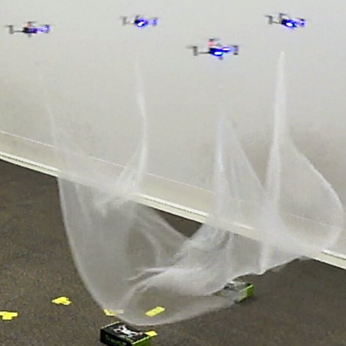
1.2 Problem statement
The equations describing the dynamics of a group of n quadrotors are given by (see Figure 2, and for modeling details see [6]):
\begin{align} \boldsymbol{\dot{\xi}}_{1i} &= \boldsymbol{\xi}_{2i} , \tag{1a}\\ \boldsymbol{\dot{\xi}}_{2i} &= \boldsymbol{g}_{\boldsymbol{\xi} i}(\boldsymbol{\eta}_{1i})u_{mi}-\boldsymbol{G}_{i} - \boldsymbol{\Lambda}_{\boldsymbol{\xi} i}\boldsymbol{\xi}_{2i} + \boldsymbol{d}_{\xi i}, \tag{1b}\\ \boldsymbol{\dot{\eta}}_{1i} &= \boldsymbol{\eta}_{2i}, \tag{1c}\\ \boldsymbol{\dot{\eta}}_{2i} &= \boldsymbol{J}_i\boldsymbol{\tau}_i + \boldsymbol{\Xi}_i \boldsymbol{w}_{\boldsymbol{\eta} i}(\boldsymbol{\eta}_{2i}) - \boldsymbol{\Lambda}_{\boldsymbol{\eta} i}\boldsymbol{\eta}_{2i} + \boldsymbol{d}_{\eta i}, \tag{1d} \end{align}
with \(i =\overline{1,n}\), where \(\boldsymbol{\xi}_{1i} := [x_i \quad y_i \quad z_i]^{\top}~ \in \mathbb{R}^3\), \(\boldsymbol{\xi}_{2i} := [\dot{x}_{i} \quad \dot{y}_{i} \quad \dot{z}_{i}]^{\top}~ \in \mathbb{R}^3\), \(\boldsymbol{\eta}_{1i} := [\phi_{i} \quad \theta_{i} \quad \psi_{i}]^{\top}~ \in \mathbb{R}^3\), \(\boldsymbol{\eta}_{2i} := [\dot{\phi}_{i} \quad \dot{\theta}_{i},~\dot{\psi}_{i}]^{\top}~ \in \mathbb{R}^3\), \(\boldsymbol{d}_{\xi_{i}} := [d_{x_{i}} \quad d_{y_{i}} \quad d_{z_{i}}]^{\top}~ \in \mathbb{R}^3\) and \(\boldsymbol{d}_{\eta_i} := [d_{\phi_i} \quad d_{\theta_i} \quad d_{\psi_i}]^{\top}~ \in \mathbb{R}^3\). The terms \(x_{i}, y_{i} \in \mathbb{R}\) denote the coordinates in the horizontal plane, \(z_{i} \in \mathbb{R}\) describes the vertical position; \(\phi_{i}, \theta_{i}\) and \(\psi_{i} \in \mathbb{R}\) represent the tilt angles about the \(X\) axis (roll), the \(Y\) axis (pitch), and the \(Z\) axis (yaw), respectively. On the other hand, \(\boldsymbol{G}_{i} := [0 \quad 0 \quad g]^{\top} \in \mathbb{R}^3\), \(\boldsymbol{J}_{i} := \operatorname{diag}(J_{xi}^{-1},~ J_{yi}^{-1},~J_{zi}^{-1}) \in \mathbb{R}^{3\times 3}\) and \(\boldsymbol{\tau}_i := [\tau_{\phi_{i}} \quad \tau_{\theta_{i}} \quad \tau_{\psi_{i}}]^{\top} \in \mathbb{R}^3\) correspond to the gravity vector, the inertia matrix, and the torque vector, with \(g\) as the gravitational acceleration, \(J_{x_{i}}\), \(J_{y_{i}}\) and \(J_{z_{i}}\) as the moments of inertia about the \(X\), \(Y\) and \(Z\) axes, while \(\tau_{\phi_{i}}\), \(\tau_{\theta_{i}}\) and \(\tau_{\psi_{i}} \in \mathbb{R}\) are the roll, pitch, and yaw torques, respectively. The term \(u_{m_{i}} := {u_{i}}/{m_{i}}\), where \(u_i \in \mathbb{R}\), represents the thrust in \(Z\) and \(m_i \in \mathbb{R}^+\) represents the mass of each quadrotor. The matrices \(\boldsymbol{\Lambda}_{\xi i} := \operatorname{diag}{(a_{x i},a_{y i},a_{z i})} \in \mathbb{R}^{3\times 3}\), \(\boldsymbol{\Lambda}_{\eta i} := \operatorname{diag}{(a_{\phi i},a_{\theta i},a_{\psi i})} \in \mathbb{R}^{3\times 3}\) and \(\boldsymbol{\Xi} i := \operatorname{diag}{(b_{\phi i}, b_{\theta i}, b_{\psi i})} \in \mathbb{R}^{3\times 3}\) are given by the aerodynamic damping coefficients \(a_{x i}\), \(a_{y i}\) and \(a_{z i}\), the rotational moment drag coefficients \(a_{\phi i}\), \(a_{\theta i}\) and \(a_{\psi i}\), and the inertia coefficients \(b_{\phi i} := ({J_{y i} - J_{z i}})/{J_{x i}}\), \(b_{\theta i} := ({J_{z i} - J_{x i}})/{J_{y i}}\) and \(b_{\psi i} := ({J_{x i} - J_{y i}})/{J_{z i}}\). The functions \(\boldsymbol{g}_{\boldsymbol{\boldsymbol{\xi}} i} : \mathbb{R}^3 \rightarrow \mathbb{R}^3\) and \(\boldsymbol{w}_{\boldsymbol{\eta} i} : \mathbb{R}^3 \rightarrow \mathbb{R}^3\) are defined as follows: \(\boldsymbol{g}_{\boldsymbol{\xi i}}(\boldsymbol{\eta}_1 i) := [\cos\phi_{i} \operatorname{sen}\theta_{i} \cos\psi_{i} + \operatorname{sen}\phi_{i} \operatorname{sen}\psi_{i} \quad \cos\phi_{i} \operatorname{sen}\theta_{i} \operatorname{sen}\psi_{i} - \operatorname{sen}\phi_{i} \cos\psi_{i} \quad \cos\phi_{i} \cos\theta_{i} ]^{\top}\) and \(\boldsymbol{w}_{\boldsymbol{\eta} i}(\boldsymbol{\eta}_{2 i}):=[\dot{\theta}_{i}\dot{\psi}_{i} \quad \dot{\phi}_{i}\dot{\psi}_{i} \quad \dot{\phi}_{i}\dot{\theta}_{i} ]^{\top}\). The terms \(d_{x}\), \(d_{y}\), \(d_{z}\), \(d_{\phi_i}\), \(d_{\theta_i}\) and \(d_{\psi_i} ~ \in \mathbb{R}\) represent the disturbances given by uncertainties and external disturbances, e.g., some unmodeled dynamics and wind gusts.
This thesis aims to solve the formation problem for a multi-quadrotor system using a leader-centered formation scheme.
In multi-agent systems with leader-centered formation, a specific agent is designated as the leader, and it is the only one capable of knowing the desired trajectory. From the position of the leader agent, the formation of the other agents in the system is determined. The main challenge that arises is the coordination and control of the follower agents.
To achieve this, a combination of continuous sliding modes and PID controllers will be used.
In addition, a comparative analysis among the different controllers is carried out, using simulation and experimental results, with the purpose of identifying the control scheme that presents the best performance.
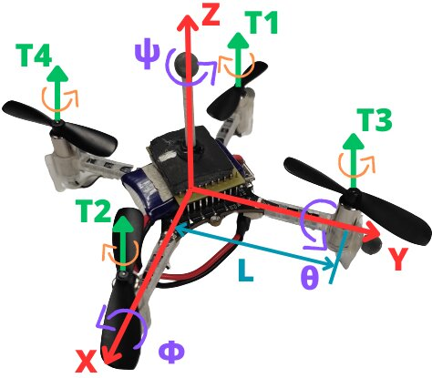
1.3 State of the Art
In recent decades, the study of cooperative control and formation control of multi-agent systems has experienced significant growth due to the need to address complex tasks in various fields, such as logistics, exploration of inaccessible areas, and surveillance, among others.
For example, in [7], a method was proposed to track multiple quadrotors flying in formation indoors. In [8], a formation-containment control scheme is proposed for a set of micro quadrotors in which an adaptive sliding mode is employed. The proposed multi-agent system consists of a virtual leader and a set of modeled leaders and followers, where the virtual leader establishes the trajectory of the group of micro quadrotors. The proposal consists of two layers to solve the containment problem; in the first layer, the leaders achieve a time-varying formation with respect to the virtual leader, and then the followers converge to a convex hull generated by the leaders.
In [9], a formation control with fixed-time stability is considered for a group of quadrotors that cooperatively transport a suspended load under a leader-follower scheme. This control scheme includes an observer to compensate for disturbances affecting the position dynamics.
In [10], a bio-inspired flight algorithm is developed, which uses reinforcement learning to control a group of quadrotors in a manner similar to how animals do. Unlike conventional controllers such as PID, it is based on the idea that animals learn to control their movements through trial and error, using their maximum capabilities in an optimized way.
In [11], a formation control strategy for multiple UAVs of quadrotor type is presented, using a multi-constrained Model Predictive Control approach. This strategy combines the Kalman-consensus filter and a fixed-time disturbance observer to achieve stable and robust formation control in complex environments.
In [12], a robust consensus control of a leader-follower multi-agent system is presented, subject to communication failures, guaranteeing the convergence of the agents’ trajectories to a leader agent when all followers are experiencing information exchange failures.
In [13], new conditions for consensus and stabilization of multi-agent systems are introduced through the use of dynamic output feedback protocols.
In [14], an adaptive and robust control methodology is proposed for cooperative load transport in networked UAV systems, which is based on formation tracking and offers an efficient and simplified solution to the problem, demonstrated through simulations and laboratory experiments.
In [15], a geometric controller for load transfer using quadrotors is proposed. In [16], the design of a robust controller for a set of quadrotors forming a geometric pattern is addressed. The proposed control strategy is based on sliding mode techniques in the presence of a class of disturbances.
In [17], the formation control of agents with unknown disturbances is addressed, considering two different cases: one where agents measure relative displacements and another where an agent measures its position in a global system.
In [18], a control approach based on Active Disturbance Rejection is introduced for cooperative formation control of a set of UAVs. The strategy focuses on disturbance estimation with the aim of optimizing the efficiency and precision of the UAV formation. The proposed method uses observers to evaluate nonlinear disturbances and a feedback control based on these estimates to increase resistance against disturbances. Although this study does not include experimental validation, simulation results show an improvement in the performance of the UAV formation.
In [19], the formation problem of multiple UAVs is addressed. A cooperative control technique is proposed that uses neural networks to increase the precision and stability of a PID control. To accelerate the convergence speed of the neural network, momentum terms and gradient factors are added. Simulation results indicate that the proposed algorithm optimizes convergence efficiency and demonstrates a certain robustness.
In [20], a two-layer control algorithm for UAV groups is presented that addresses trajectory tracking and avoids collisions in the presence of unknown disturbances. Using distributed control techniques and state observer, the safety of the UAVs is guaranteed while they follow their desired trajectories.
In [21], a robust controller is proposed for the transport of an object by means of two UAVs, through a neural network; in addition, an observer is incorporated to estimate and compensate for disturbances, reinforcing the robustness of the controller. The results are limited to simulation. In [22], a robust formation controller is suggested that takes into account disturbances and time delay in the communication network of the system.
In [23], a formation control for a time-varying geometric pattern is presented. The authors employ a cascade control strategy (attitude-position) based on sliding modes. The controller design uses a linearization of the virtual controllers, which generate the reference signals corresponding to roll, pitch, and total thrust. On the other hand, in [24], trajectory tracking in a quadrotor is presented, also using a cascade sliding-mode control strategy; in this case, a linearization of the virtual controllers is not used in the controller design. This implies that the result in [23] is local, i.e., for small angles, while in [24] such a restriction is not present.
1.4 Contribution
Motivated by recent advances in the field, this thesis work extends the proposal presented in [24], with the aim of addressing leader-centered formation problems. The main contribution of this work lies in the experimental implementation of said formation scheme and the development of a platform for multi-quadrotor systems. To address the problem, robust controllers for the formation of quadrotors were considered using PID controllers, and continuous sliding-mode controllers, such as the Super-Twisting Algorithm [25], Continuous Twisting [26], Singular Terminal Sliding Modes [27], and Nonsingular Terminal Sliding Modes [28].
1.5 Thesis organization
The rest of the document has the following structure. Chapter 2 presents some mathematical preliminaries necessary for the development of this work. Chapter 3 presents the modeling of a group of quadrotors, as well as the design of the robust controllers; it includes the design of observers, necessary for the consideration of external disturbances. The simulation and experimental results are shown in Chapter 4. The final conclusions are found in Chapter 5.
2 Preliminaries
2.1 Notation:
\(0_n \in \mathbb{R}^{n \times n}\) and \(I_n \in \mathbb{R}^{n \times n}\) denote the zero and identity matrices of dimension \(n\), respectively; \(\mathbb{R}^+ := \{x \in \mathbb{R} : x \geq 0\}\) denotes the set of all nonnegative real numbers. For a Lebesgue measurable function \(d : \mathbb{R}^+ \rightarrow \mathbb{R}^m\), the norm \(\|d\|_{[t_0, t_1)} = \operatorname{esssup}_{t \in [t_0, t_1)} \|d(t)\|\) is defined, then \(\|d\|_f = \|d\|_{[t_f, +\infty)}\) and \(\|d\|_{\infty} = \|d\|_{[0, +\infty)}\); The set of \(d(t)\) with the property \(\|d\|_{\infty} < +\infty\) is denoted as \(\mathcal{L}_{\infty}\); and \(\mathcal{L}_D = \{d \in \mathcal{L}_{\infty} : \|d\|_{\infty} \leq D\}\), for any \(D > 0\). A sequence of integers \(1, \ldots, n\) is denoted as \(\overline{1, n}\). The function \(\lceil s \rfloor^{\beta} := |s|^{\beta}\operatorname{sign}(s)\), for any \(s \in \mathbb{R}\) and \(\beta \in \mathbb{R}_{\geq 0}\), and \(\lceil s \rfloor^{\beta} := [\lceil s_1 \rfloor^{\beta} \quad \ldots \quad \lceil s_n \rfloor^{\beta}]^T\), for any \(s \in \mathbb{R}^n\).
2.2 Definitions
A continuous function \(\alpha: \mathbb{R}_+ \to \mathbb{R}_+\) belongs to class \(\mathrm{K}\) if it is strictly increasing and \(\alpha(0) = 0\); it belongs to class \(\mathrm{K}_\infty\) if it is also unbounded. A continuous function \(\beta: \mathbb{R}_+ \times \mathbb{R}_+ \to \mathbb{R}_+\) belongs to class \(\mathrm{KL}\) if for each fixed value of \(s\), \(\beta(\cdot, s) \in K\), and \(\beta(r, \cdot)\) is strictly decreasing toward zero for any fixed value of \(r \in \mathbb{R}_+\). The function \(\beta\) belongs to class \(\mathrm{KL_T}\) if for each fixed value of \(s\), \(\beta(\cdot, s) \in K\), and for each fixed value of \(r\), there exists \(0 < T(r) < \infty\) such that \(\beta(r, s)\) decreases toward zero with respect to \(s < T(r)\), and \(\beta(r, s) = 0\) for all \(s \geq T(r)\).
The following time-varying differential equation is considered, represented as [29]: \[\label{eq:3} \frac{{dx(t)}}{{dt}} = f(t, x(t)), \quad t \geq t_0, \quad t_0 \in \mathbb{R}, \tag{2}\] where \(x(t) \in \mathbb{R}^n\) is the state, \(f: \mathbb{R}_{\geq 0} \times \mathbb{R}^n \rightarrow \mathbb{R}^n\) is a continuous function with respect to \(x\) and measurable with respect to \(t\), and moreover \(f(t, 0) = 0\). It is assumed that the solution of (2), for an initial condition \(x_0 \in \mathbb{R}^n\) at a time \(t_0 \in \mathbb{R}\), is given by \(x(t, t_0, x_0)\), and is defined on some time interval \([t_0, t_0 + T)\), where \(0 \leq T < \infty\). Let \(\Omega\) be an open subset of \(\mathbb{R}^n\), such that \(0 \in \Omega\).
Definition 1. [29], [30]. At the equilibrium point \(x = 0\), the system (2) is said to be:
Uniformly Stable (US), if for any \(\epsilon > 0\), there exists a \(\delta(\epsilon)\) such that for any \(x_0 \in \Omega\), if \(||x_0|| \leq \delta(\epsilon)\), then \(||x(t, t_0, x_0)|| \leq \epsilon\) for all \(t \geq t_0\), for any \(t_0 \in \mathbb{R}\).
Uniformly Exponentially Stable (UES), if it satisfies the US condition and has exponential convergence from \(\Omega\), that is, for any \(x_0 \in \Omega\), it holds that \(||x(t, t_0, x_0)|| \leq k \cdot ||x_0|| \cdot e^{-\gamma(t - t_0)}\) with \(k, \gamma > 0\) for all \(t \geq t_0\) and any \(t_0 \in \mathbb{R}\).
Uniformly Finite-Time Stable (UFTS), if it satisfies the US condition and converges in finite time from \(\Omega\), that is, for any \(x_0 \in \Omega\), there exists a \(0 \leq T_{x_0} < +\infty\) such that \(x(t, t_0, x_0) = 0\) for all \(t \geq t_0 + T_{x_0}\) and any \(t_0 \in \mathbb{R}\). The function \(T_0(x_0) = \inf\{T_{x_0} \geq 0 : x(t, t_0, x_0) = 0, \forall t \geq t_0 + T_{x_0}\}\) is called the settling time of system (2).
If \(\Omega = \mathbb{R}^n\), then \(x = 0\) is said to be globally US (GUS), UES (GUES), or UFTS (GUFTS), respectively.
Definition 2. [31] Consider the system \[\label{eq:3.1} \frac{{dx(t)}}{{dt}} = f(t, x(t), u) \tag{3}\] System (3) is said to be input-to-state stable (ISS) if, for any \(u\in \mathrm{L}_{\infty}\), there exist functions \(\beta \in \mathrm{KL}\) and \(\gamma \in \mathrm{K}\) such that \[||x(t,x_{0},w)||\leq \beta(||x_{0}||,t)+\gamma(||u||_{\infty}),\ \forall t\geq 0.\] Moreover, if \(\beta \in \mathrm{KL_{T}}\), system (2) is said to be finite-time input-to-state stable (FT-ISS).
Definition 3. [32] A formation graph \(\mathcal{G}={\{N,E,C\}}\) consists of a set of nodes \(N = \{R_1, \ldots, R_n\}\), which correspond to each agent; a set of edges \(E = \{(R_j R_i) \in N \times N ,|, i \neq j\}\), which indicates that agent \(R_i\) receives information from agent \(R_j\), and a set of labels \(C = \{c_{ji} \in \mathbb{R}^3 ,|, (R_j R_i) \in N \times N, i \neq j\}\), which represents a desired relative position vector of agent \(R_i\) with respect to agent \(R_j\). Moreover, let \(N_i \subset N\) be the set of detectable positions of agent \(R_i\).
3 Formation control in multi-quadrotor systems
This chapter addresses the modeling and formation control of multi-quadrotor systems. Each quadrotor is described by a simplified dynamics presented in Section 1.2. Six finite-time sliding-mode observers are used. A control strategy based on three PID controllers and three continuous sliding-mode controllers (which can be TC, STA, STSMC, or NTSMC) is proposed.
3.1 Modeling of a group of quadrotors
The equations describing the dynamics of a group of n quadrotors are given by (for modeling details see [6]):
\begin{align} \boldsymbol{\dot{\xi}}_{1i} &= \boldsymbol{\xi}_{2i} , \tag{4a}\\ \boldsymbol{\dot{\xi}}_{2i} &= \boldsymbol{g}_{\boldsymbol{\xi} i}(\boldsymbol{\eta}_{1i})u_{mi}-\boldsymbol{G}_{i} - \boldsymbol{\Lambda}_{\boldsymbol{\xi} i}\boldsymbol{\xi}_{2i} + \boldsymbol{d}_{\xi i}, \tag{4b}\\ \boldsymbol{\dot{\eta}}_{1i} &= \boldsymbol{\eta}_{2i}, \tag{4c}\\ \boldsymbol{\dot{\eta}}_{2i} &= \boldsymbol{J}_i\boldsymbol{\tau}_i + \boldsymbol{\Xi}_i \boldsymbol{w}_{\boldsymbol{\eta} i}(\boldsymbol{\eta}_{2i}) - \boldsymbol{\Lambda}_{\boldsymbol{\eta} i}\boldsymbol{\eta}_{2i} + \boldsymbol{d}_{\eta i}, \tag{4d}\\ Y_i &= [\boldsymbol{\xi_{1i}}^\top \quad \boldsymbol{\eta}_{1i}^\top]^\top, \tag{4e} \end{align}
with \(i =\overline{1,n}\), where \(\boldsymbol{\xi}_{1i} := [x_i \quad y_i \quad z_i]^{\top}~ \in \mathbb{R}^3\), \(\boldsymbol{\xi}_{2i} := [\dot{x}_{i} \quad \dot{y}_{i} \quad \dot{z}_{i}]^{\top}~ \in \mathbb{R}^3\), \(\boldsymbol{\eta}_{1i} := [\phi_{i} \quad \theta_{i} \quad \psi_{i}]^{\top}~ \in \mathbb{R}^3\), \(\boldsymbol{\eta}_{2i} := [\dot{\phi}_{i} \quad \dot{\theta}_{i},~\dot{\psi}_{i}]^{\top}~ \in \mathbb{R}^3\), \(\boldsymbol{d}_{\xi_{i}} := [d_{x_{i}} \quad d_{y_{i}} \quad d_{z_{i}}]^{\top}~ \in \mathbb{R}^3\) and \(\boldsymbol{d}_{\eta_i} := [d_{\phi_i} \quad d_{\theta_i} \quad d_{\psi_i}]^{\top}~ \in \mathbb{R}^3\). The terms \(x_{i}, y_{i} \in \mathbb{R}\) denote the coordinates in the horizontal plane, \(z_{i} \in \mathbb{R}\) describes the vertical position; \(\phi_{i}, \theta_{i}\) and \(\psi_{i} \in \mathbb{R}\) represent the tilt angles around the \(X\) axis (roll), the \(Y\) axis (pitch), and the \(Z\) axis (yaw), respectively. On the other hand, \(\boldsymbol{G}_{i} := [0 \quad 0 \quad g]^{\top} \in \mathbb{R}^3\), \(\boldsymbol{J}_{i} := \operatorname{diag}(J_{xi}^{-1},~ J_{yi}^{-1},~J_{zi}^{-1}) \in \mathbb{R}^{3\times 3}\) and \(\boldsymbol{\tau}_i := [\tau_{\phi_{i}} \quad \tau_{\theta_{i}} \quad \tau_{\psi_{i}}]^{\top} \in \mathbb{R}^3\) correspond to the gravity vector, the inertia matrix, and the torque vector, with \(g\) as the gravitational acceleration, \(J_{x_{i}}\), \(J_{y_{i}}\) and \(J_{z_{i}}\) as the moments of inertia about the \(X\), \(Y\) and \(Z\) axes, while \(\tau_{\phi_{i}}\), \(\tau_{\theta_{i}}\) and \(\tau_{\psi_{i}} \in \mathbb{R}\) are the roll, pitch, and yaw angular moments, respectively. The term \(u_{m_{i}} := {u_{i}}/{m_{i}}\), where \(u_i \in \mathbb{R}\), represents the thrust in \(Z\) and \(m_i \in \mathbb{R}^+\) represents the mass of each quadrotor. The matrices \(\boldsymbol{\Lambda}_{\xi i} := \operatorname{diag}{(a_{x i},a_{y i},a_{z i})} \in \mathbb{R}^{3\times 3}\), \(\boldsymbol{\Lambda}_{\eta i} := \operatorname{diag}{(a_{\phi i},a_{\theta i},a_{\psi i})} \in \mathbb{R}^{3\times 3}\) and \(\boldsymbol{\Xi} i := \operatorname{diag}{(b_{\phi i}, b_{\theta i}, b_{\psi i})} \in \mathbb{R}^{3\times 3}\) are given by the aerodynamic damping coefficients \(a_{x i}\), \(a_{y i}\) and \(a_{z i}\), the rotational moment drag coefficients \(a_{\phi i}\), \(a_{\theta i}\) and \(a_{\psi i}\), and the inertia coefficients \(b_{\phi i} := ({J_{y i} - J_{z i}})/{J_{x i}}\), \(b_{\theta i} := ({J_{z i} - J_{x i}})/{J_{y i}}\) and \(b_{\psi i} := ({J_{x i} - J_{y i}})/{J_{z i}}\). The functions \(\boldsymbol{g}_{\boldsymbol{\boldsymbol{\xi}} i} : \mathbb{R}^3 \rightarrow \mathbb{R}^3\) and \(\boldsymbol{w}_{\boldsymbol{\eta} i} : \mathbb{R}^3 \rightarrow \mathbb{R}^3\) are defined as follows: \(\boldsymbol{g}_{\boldsymbol{\xi i}}(\boldsymbol{\eta}_1 i) := [\cos\phi_{i} \operatorname{sen}\theta_{i} \cos\psi_{i} + \operatorname{sen}\phi_{i} \operatorname{sen}\psi_{i} \quad \cos\phi_{i} \operatorname{sen}\theta_{i} \operatorname{sen}\psi_{i} - \operatorname{sen}\phi_{i} \cos\psi_{i} \quad \cos\phi_{i} \cos\theta_{i} ]^{\top}\) and \(\boldsymbol{w}_{\boldsymbol{\eta} i}(\boldsymbol{\eta}_{2 i}):=[\dot{\theta}_{i}\dot{\psi}_{i} \quad \dot{\phi}_{i}\dot{\psi}_{i} \quad \dot{\phi}_{i}\dot{\theta}_{i} ]^{\top}\). The terms \(d_{x}\), \(d_{y}\), \(d_{z}\), \(d_{\phi_i}\), \(d_{\theta_i}\) and \(d_{\psi_i} ~ \in \mathbb{R}\) represent the disturbances given by uncertainties and external disturbances, e.g., some unmodeled dynamics and wind gusts. The variable \(Y_{i}\) represents the system output vector, which measures the position and attitude of each agent.
Assumption 1. The leader is the only agent capable of knowing the desired trajectory.
Assumption 2. In the graph under study, the leader has a directed spanning tree, that is, there are directed paths from the leader to all other agents (Figure 3).
Remark 1. Assumption 2 indicates that no agent will be isolated. In this way, it is ensured that the agents converge to the desired formation using the minimum amount of information that the agents need to know.
Assumption 3. The desired trajectories \(x_d(t)\), \(y_d(t)\), \(z_d(t)\) and \(\psi_d(t)\) are bounded and continuously differentiable.
Assumption 4. The disturbances are uniformly bounded and Lipschitz, i.e., \(d_x \in \mathcal{L}_{D_1}\), \(d_y \in \mathcal{L}_{D_2}\), \(d_z \in \mathcal{L}_{D_3}\), \(d_{\phi} \in \mathcal{L}_{D_4}\), \(d_{\theta} \in \mathcal{L}_{D_5}\), \(d_{\psi} \in \mathcal{L}_{D_6}\), \(\dot{d}_x \in \mathcal{L}_{\bar{D}_1}\), \(\dot{d}_y \in \mathcal{L}_{\bar{D}_2}\), \(\dot{d}_z \in \mathcal{L}_{\bar{D}_3}\), \(\dot{d}_{\phi} \in \mathcal{L}_{\bar{D}_4}\), \(\dot{d}_{\theta} \in \mathcal{L}_{\bar{D}_5}\), \(\dot{d}_{\psi} \in \mathcal{L}_{\bar{D}_6}\); with known positive constants \(D_j\) and \(\bar{D}_j\), \(j = \overline{1, 6}\).
Next, the following statements are introduced:
Agent \(R_{n}\) is considered the leader agent, and the other agents as followers.
The desired formation vectors \(C_{j i}\) are time-invariant, that is, \(C_{j i} = [c_{j i x} \quad c_{j i y} \quad c_{j i z}]^\top\).
The desired trajectory, for the leader agent \(R_{n}\), is defined as \(\boldsymbol{\xi}_{d} = [x_{d} \quad y_{d} \quad z_{d}]^T\) and \(\boldsymbol{\eta}_d = [\phi_{\star_n} \quad \theta_{\star_n} \quad \psi_d]\), where \(x_d\), \(y_d\), \(z_d\), and \(\psi_d \in \mathcal{C}^\infty\) are some desired trajectories to be followed, while \(\phi_{\star_n}\) and \(\theta_{\star_n}\) are reference signals generated with virtual controls (to be designed later). The desired trajectory is continuous and bounded.
3.2 Control strategy
The design of the formation control, for a group of \(n\) quadrotors, is based on the formation graph presented in Figure 3.
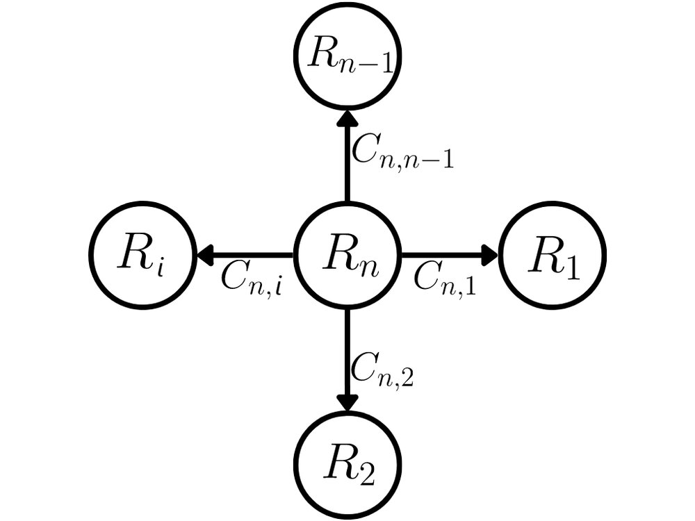
3.2.1 Finite-time sliding-mode observer (FT-SMO)
The system is affected by unknown disturbances that impact the flight capability of each quadrotor agent. To address these problems, the use of observers is essential. In our case, the presented observer estimates the velocities in the \(x\), \(y\), \(z\) coordinates and the angular velocities in \(\phi\), \(\theta\), and \(\psi\), in addition to the disturbances present in the system.
Consider system (4), for which the following observer [24] is proposed:
\begin{align} \dot{\hat{\boldsymbol{\xi}}}_{1 i} &= \hat{\boldsymbol{\xi}}_{2 i} + \hat{\boldsymbol{K}}_{1 i} \boldsymbol{\varphi}_{1 i}(\hat{\boldsymbol{e}}_{\boldsymbol{\xi} i}) ,\label{eq:1a} \tag{5a}\\ \dot{\hat{\boldsymbol{\xi}}}_{2 i} &= \boldsymbol{g}_{\boldsymbol{\xi} i}(\boldsymbol{\eta}_{1 i})u_{m i} - \boldsymbol{G} - \boldsymbol{\Lambda}_{\boldsymbol{\xi} i} \hat{\boldsymbol{\xi}}_{2 i} + \hat{\boldsymbol{\xi}}_{3 i} + \hat{\boldsymbol{K}}_{2 i} \boldsymbol{\varphi}_{2 i}(\hat{\boldsymbol{e}}_{\boldsymbol{\xi} i}),\label{eq:1b} \tag{5b}\\ \dot{\hat{\boldsymbol{\xi}}}_{3 i} &= \hat{\boldsymbol{K}}_{3 i} \boldsymbol{\varphi}_{3 i}(\hat{\boldsymbol{e}}_{\boldsymbol{\xi}i}) ,\label{eq:1c} \tag{5c}\\ \dot{\hat{\boldsymbol{\eta}}}_{1 i} &=\hat{\boldsymbol{\eta}}_{2 i} + \hat{\boldsymbol{K}}_{4 i} \boldsymbol{\varphi}_{1 i}(\hat{\boldsymbol{e}}_{\boldsymbol{\eta} i}) ,\label{eq:1d} \tag{5d}\\ \dot{\hat{\boldsymbol{\eta}}}_{2 i} &= \boldsymbol{J}_i\boldsymbol{\tau}_i+\boldsymbol{\Xi}_i \boldsymbol{w}_{i}(\hat{\boldsymbol{\eta}}_{2i}) - \boldsymbol{\Lambda}_{\boldsymbol{\eta} i}\hat{\boldsymbol{\eta}}_{2i} + \hat{\boldsymbol{\eta}}_{3i} +\hat{\boldsymbol{K}}_{5 i} \boldsymbol{\varphi}_{2 i}(\hat{\boldsymbol{e}}_{\boldsymbol{\eta}i}) ,\label{eq:1e} \tag{5e}\\ \dot{\hat{\boldsymbol{\eta}}}_{3 i} &= \hat{\boldsymbol{K}}_{6 i} \boldsymbol{\varphi}_{3 i}(\hat{\boldsymbol{e}}_{\boldsymbol{\eta} i}) ,\label{eq:1f} \tag{5f} \end{align}
where \(\hat{\boldsymbol{e}}_{\boldsymbol{\xi} i}:=\boldsymbol{\xi}_{1i}-\boldsymbol{\hat{\xi}}_{1i} \in \mathbb{R}^3\) and \(\hat{\boldsymbol{e}}_{\boldsymbol{\eta} i}:=\boldsymbol{\eta}_{1i}-\boldsymbol{\hat{\eta}}_{1i} \in \mathbb{R}^3\) are the output errors; the nonlinear output injections \(\boldsymbol{\varphi}_{1 i}\), \(\boldsymbol{\varphi}_{2 i}\), \(\boldsymbol{\varphi}_{3 i} : \mathbb{R}^3 \rightarrow \mathbb{R}^3\) are given as \[\boldsymbol{\varphi}_{1 i}(\boldsymbol{s}) := \lceil \boldsymbol{s} \rfloor ^{\frac{2}{3}}, \quad \boldsymbol{\varphi}_{2}(\boldsymbol{s}) := \lceil \boldsymbol{s} \rfloor ^{\frac{1}{3}}, \quad \boldsymbol{\varphi}_{3}(\boldsymbol{s}) := \lceil \boldsymbol{s} \rfloor ^{0}\] with \(\lceil \boldsymbol{s} \rfloor ^{\gamma}:=[ \lceil s_{1} \rfloor ^{\gamma} \quad \lceil s_{2} \rfloor ^{\gamma} \quad \lceil s_{3} \rfloor ^{\gamma} ]^\top\), and a diagonal gain matrix \(\boldsymbol{\hat{K}}_{ji}= \operatorname{diag}{(k_{j1i},k_{j2i},k_{j3i})}\) with \(j =\overline{1,6}\). The estimation state error is defined as \(\hat{\boldsymbol{e}}:= [\hat{\boldsymbol{e}}_{\boldsymbol{\xi} i}^\top \quad \hat{\boldsymbol{\varepsilon}}_{\boldsymbol{\xi} i}^\top \quad \hat{\boldsymbol{\epsilon}}_{\boldsymbol{\xi} i}^\top \quad \hat{\boldsymbol{e}}_{\boldsymbol{\eta} i}^\top \quad \hat{\boldsymbol{\varepsilon}}_{\boldsymbol{\eta} i}^\top \quad \hat{\boldsymbol{\epsilon}}_{\boldsymbol{\eta} i}^\top]^T\), where \(\hat{\boldsymbol{\varepsilon}}_{\boldsymbol{\xi} i} := \boldsymbol{\xi}_{2i} -\boldsymbol{\hat{\xi}}_{2i}\) and \(\hat{\boldsymbol{\varepsilon}}_{\boldsymbol{\eta} i} := \boldsymbol{\eta}_{2i} -\boldsymbol{\hat{\eta}}_{2i}\), \(\hat{\boldsymbol{\epsilon}}_{\boldsymbol{\xi} i} := \boldsymbol{d}_{\xi i}(t) - \hat{\boldsymbol{\xi}}_{3 i}\) and \(\hat{\boldsymbol{\epsilon}}_{\boldsymbol{\eta} i} := \boldsymbol{d}_{\eta i}(t) - \hat{\boldsymbol{\eta}}_{3 i}\) are the linear and angular velocity errors, respectively.
The estimated variables corresponding to the velocity \(\xi_{2 i}\) of the system are given by (5b) and the angular velocities \(\eta_{2 i}\) by (5e), and the variables corresponding to the disturbance estimation of the system are (5c) and (5f).
Then, if observer (5) [24] is applied to system (4), and the gains are selected as [33]:
| \(\hat{k}_{11i} = 2\bar{D}_{x}^{\frac{1}{3}}\), | \(\hat{k}_{12i} = 1.5\bar{D}_{x}^{\frac{1}{2}}\), | \(\hat{k}_{13i} = 1.1\bar{D}_{x}\), |
| \(\hat{k}_{21i} = 2\bar{D}_{y}^{\frac{1}{3}}\), | \(\hat{k}_{22i} = 1.5\bar{D}_{y}^{\frac{1}{2}}\), | \(\hat{k}_{23i} = 1.1\bar{D}_{y}\), |
| \(\hat{k}_{31i} = 2\bar{D}_{z}^{\frac{1}{3}}\), | \(\hat{k}_{32i} = 1.5\bar{D}_{z}^{\frac{1}{2}}\), | \(\hat{k}_{33i} = 1.1\bar{D}_{z}\), |
| \(\hat{k}_{41i} = 2\bar{D}_{\phi}^{\frac{1}{3}}\), | \(\hat{k}_{42i} = 1.5\bar{D}_{\phi}^{\frac{1}{2}}\), | \(\hat{k}_{43i} = 1.1\bar{D}_{\phi},\) |
| \(\hat{k}_{51i} = 2\bar{D}_{\theta}^{\frac{1}{3}}\), | \(\hat{k}_{52i} = 1.5\bar{D}_{\theta}^{\frac{1}{2}}\), | \(\hat{k}_{53i} = 1.1\bar{D}_{\theta},\) |
| \(\hat{k}_{61i} = 2\bar{D}_{\psi}^{\frac{1}{3}}\), | \(\hat{k}_{62i} = 1.5\bar{D}_{\psi}^{\frac{1}{2}}\), | \(\hat{k}_{63i} = 1.1\bar{D}_{\psi},\) |
and moreover Assumption 4 holds, \(\hat{\boldsymbol{e}}=0\), it is UFTS.
3.2.1.1 Disturbance identification
Therefore, after some finite time, the estimation error dynamics can be written as follows \[\begin{split} \dot{\hat{\boldsymbol{e}}}_{\boldsymbol{\xi} i} &= \hat{\boldsymbol{\varepsilon}}_{\boldsymbol{\xi} i} - \boldsymbol{\hat{K}}_{1 i} \boldsymbol{\varphi}_{1 i} (\boldsymbol{\hat{e}}_{\boldsymbol{\xi} i}) ,\\ \dot{\hat{\boldsymbol{\varepsilon}}}_{\boldsymbol{\xi} i} &= \boldsymbol{\hat{\epsilon}}_{\boldsymbol{\xi} i} - \boldsymbol{\hat{K}}_{2i} \boldsymbol{\varphi}_{2 i} (\boldsymbol{\hat{e}}_{\boldsymbol{\xi} i}) , \\ \dot{\hat{\boldsymbol{\epsilon}}}_{\boldsymbol{\xi} i} &= \boldsymbol{\dot{d}}_{\xi i} - \boldsymbol{\hat{K}}_{3i} \boldsymbol{\varphi}_{3 i} (\boldsymbol{\hat{e}}_{\boldsymbol{\xi} i}) ,\\ \dot{\hat{\boldsymbol{e}}}_{\boldsymbol{\eta} i} &= \boldsymbol{\hat{\varepsilon}}_{\boldsymbol{\eta} i} - \boldsymbol{\hat{K}}_{4 i} \boldsymbol{\varphi}_{1 i} (\boldsymbol{\hat{e}}_{\boldsymbol{\eta} i}), \\ \dot{\hat{\boldsymbol{\varepsilon}}}_{\boldsymbol{\eta} i} &= \boldsymbol{\hat{\epsilon}}_{\boldsymbol{\eta} i} - \boldsymbol{\hat{K}}_{5i} \boldsymbol{\varphi}_{2 i} (\boldsymbol{\hat{e}}_{\boldsymbol{\eta} i}) ,\\ \dot{\hat{\boldsymbol{\epsilon}}}_{\boldsymbol{\eta} i} &= \boldsymbol{\dot{d}}_{\eta i} - \boldsymbol{\hat{K}}_{6i} \boldsymbol{\varphi}_{3 i} (\boldsymbol{\hat{e}}_{\boldsymbol{\eta} i}). \end{split}\]
Since this dynamics is UFTS, it holds that \(\hat{\boldsymbol{\xi}}_{1 i}(t) = \boldsymbol{\xi}_{1 i}(t)\), \(\hat{\boldsymbol{\xi}}_{2 i}(t) = \boldsymbol{\xi}_{2 i}(t)\), \(\hat{\boldsymbol{\xi}}_{3 i}(t) = \boldsymbol{d}_{\xi}(t)\), \(\hat{\boldsymbol{\eta}}_{1 i}(t) = \boldsymbol{\eta}_{1 i}(t)\), \(\hat{\boldsymbol{\eta}}_{2 i}(t) = \boldsymbol{\eta}_{2 i}(t)\), \(\hat{\boldsymbol{\eta}}_{3 i}(t) = \boldsymbol{d}_{\eta}(t)\), for all \(t\geq T_0 >0\). If Assumption 4 holds, then the FT-SMO, given by (5), provides the following disturbance identifications for all \(t \geq T_0\)
\begin{align} \hat{\boldsymbol{\xi}}_{3i}(t) &= [\hat{\xi}_{x3i}(t) \quad \hat{\xi}_{y3i}(t) \quad \hat{\xi}_{z3i}(t)]^\top = [d_{x}(t) \quad d_{y}(t) \quad d_{z}(t)]^\top , \tag{6a}\\ \hat{\boldsymbol{\eta}}_{3i}(t) &= [\hat{\eta}_{\phi 3i}(t) \quad \hat{\eta}_{\theta 3i}(t) \quad \hat{\eta}_{\psi 3i}(t)]^\top= [d_{\phi}(t) \quad d_{\theta}(t) \quad d_{\psi}(t)]^\top. \tag{6b} \end{align}
Such identification terms can be used to strengthen any type of control strategy.
3.2.2 Controller design
Considering the leader-centered formation graph, the formation errors for agents \(j=\overline{1,n-1}\) are given as follows \[\begin{split} \boldsymbol{e}_{\boldsymbol{\xi} j} &= \boldsymbol{\xi}_{1 j} - \boldsymbol{\xi}_{1 n} - C_{n,j}, \\ \boldsymbol{\varepsilon}_{\boldsymbol{\xi} j} &= \hat{\boldsymbol{\xi}}_{2 j} - \boldsymbol{\xi}_{2 n}, \\ \boldsymbol{e}_{\boldsymbol{\eta} j} &= \boldsymbol{\eta}_{1 j} - \boldsymbol{\eta}_{d j},\\ \boldsymbol{\varepsilon}_{\boldsymbol{\eta} j} &= \hat{\boldsymbol{\eta}}_{2 j} - \dot{\boldsymbol{\eta}}_{d j}, \end{split}\] where \(C_{n,j}\in\mathbb{R}^{3}\) is the formation vector with respect to the leader and \(\boldsymbol{\eta}_{d j}=[\phi_{\star j} \quad \theta_{\star j} \quad \psi_{n}]^{\top}\in\mathbb{R}^{3}\), with \(\phi_{\star j}\) and \(\theta_{\star j}\) as certain reference signals designed later.
On the other hand, the tracking error of the leader agent \(n\) is given as \[\begin{split} \boldsymbol{e}_{\boldsymbol{\xi} n} &= \boldsymbol{\xi}_{1 n} - \boldsymbol{\xi}_{d},\\ \boldsymbol{\varepsilon}_{\boldsymbol{\xi} n} &= \hat{\boldsymbol{\xi}}_{2 n} - \dot{\boldsymbol{\xi}}_{d},\\ \boldsymbol{e}_{\boldsymbol{\eta} n} &= \boldsymbol{\eta}_{1 n} - \boldsymbol{\eta}_{d},\\ \boldsymbol{\varepsilon}_{\boldsymbol{\eta} n} &= \hat{\boldsymbol{\eta}}_{2 n} - \dot{\boldsymbol{\eta}}_{d}, \end{split}\] where \(\boldsymbol{\eta}_{d}=[\phi_{\star n} \quad \theta_{\star n} \quad \psi_{d}]^{\top}\in\mathbb{R}^{3}\), with references \(\phi_{\star n}\) and \(\theta_{\star n}\) also designed later.
Due to the underactuated nature of quadrotors (four inputs for 6 degrees of freedom), two degrees of freedom cannot be “controlled” independently. Usually, these degrees of freedom correspond to pitch and roll, which are designed as reference signals, denoted as \(\phi_{\star_i}\), \(\theta_{\star_i}\).
Thus, a virtual controller is introduced into the position error dynamics: \(\nu_i := [\nu_{xi} \quad \nu_{yi} \quad \nu_{zi}]^T\), and then the formation error dynamics can be written as: \begin{align} \dot{\boldsymbol{e}}_{\boldsymbol{\xi} i} &= \boldsymbol{\varepsilon}_{\boldsymbol{\xi} i},\label{eq:DR:a} \tag{7a}\\ \dot{\boldsymbol{\varepsilon}}_{\boldsymbol{\xi} i} &= \nu_{i} + \boldsymbol{w}_{\boldsymbol{\xi} i}(\boldsymbol{\eta}_{1 i}, u_{mi}, \nu_i) - \boldsymbol{\Lambda}_{\boldsymbol{\xi} i}\boldsymbol{\xi}_{2 i} + \boldsymbol{d}_{\xi i} - \ddot{\boldsymbol{\xi}}_{d i} , \label{eq:DR:b} \tag{7b}\\ \dot{\boldsymbol{e}}_{\boldsymbol{\eta} i} &= \boldsymbol{\varepsilon}_{\boldsymbol{\eta} i},\label{eq:DR:c} \tag{7c}\\ \dot{\boldsymbol{\varepsilon}}_{\boldsymbol{\eta} i} &= \boldsymbol{J}_{i}\boldsymbol{\tau}_{i} + \boldsymbol{\Xi}_{i} \boldsymbol{w}_{\boldsymbol{\eta} i}(\boldsymbol{\eta}_{2 i}) - \boldsymbol{\Lambda}_{\boldsymbol{\eta} i} \boldsymbol{\eta_{2 i}} + \boldsymbol{d}_{\eta i} - \ddot{\boldsymbol{\eta}}_{d i},\label{eq:DR:d} \tag{7d} \end{align}
where \(\boldsymbol{w}_{\boldsymbol{\xi} i}(\boldsymbol{\eta}_{1 i},u_{m i},\nu_{i}) = \boldsymbol{g}_{\boldsymbol{\xi} i}(\boldsymbol{\eta}_{1 i})u_{m i} - \boldsymbol{G}_{i} - \nu_{i}\). Then, the virtual control \(\nu_i\) is selected as: \begin{align} \nu_{x i} &= u_{m i} (\cos{\phi_{\star i}}\operatorname{sen}{\theta_{\star i}}\cos{\psi_{di}} + \operatorname{sen}{\phi_{\star i}}\operatorname{sen}{\psi_{di}}), \label{eq:nu_xi} \tag{8a}\\ \nu_{y i} &= u_{m i} (\cos{\phi_{\star i}}\operatorname{sen}{\theta_{\star i}}\operatorname{sen}{\psi_{di}} - \operatorname{sen}{\phi_{\star i}}\cos{\psi_{di}}), \label{eq:nu_yi} \tag{8b}\\ \nu_{z i} &= u_{m i} \cos{\phi_{\star i}}\cos{\theta_{\star i}} - g, \label{eq:nu_zi} \tag{8c} \end{align}
where \(i = \overline{1,n}\), \(\psi_{di} = \psi_{n}\), except in \(i=n\), with \(\psi_{n} = \psi_{d}\); the reference signals for each agent are obtained by solving (8) for \(u_i\), \(\phi_{\star i}\), \(\theta_{\star i}\):
\begin{align} u_i&=m_i \sqrt{\nu_{x i}^2 + \nu_{y i}^2 +(\nu_{z i}+g)^2},\label{eq:SR:a} \tag{9a}\\ \phi_{\star i} &= \arcsin{[u_{m_i}^{-1}(\nu_{x i}\operatorname{sen}{\psi_{di}}-\nu_{y i}\cos{\psi_{di}})]},\label{eq:SR:b} \tag{9b}\\ \theta_{\star i} &= \arctan{[(\nu_{z i}+g)^{-1}(\nu_{x i}\cos{\psi_{di}}+\nu_{y i}\operatorname{sen}{\psi_{di}})]}\label{eq:SR:c}. \tag{9c} \end{align}
The signals obtained in (9) will help the system achieve the desired flight objective. On the other hand, the virtual control \(\nu_i\), and the angular momentum \(\boldsymbol{\tau}_{i}\) have the following form
\begin{align} \nu_i &= \bar{\nu}_i + \boldsymbol{\Lambda}_{\boldsymbol{\xi} i}\boldsymbol{\xi}_{2i} + \ddot{\boldsymbol{\xi}}_{di} - \hat{{\boldsymbol{\xi}}}_{3i} ,\label{eq:nu:a} \tag{10a}\\ \boldsymbol{\tau}_{i} &= \boldsymbol{J}_{i}^{-1}(\bar{\tau}_i - \boldsymbol{\Xi} \boldsymbol{w}_{\boldsymbol{\eta} i}(\boldsymbol{\eta}_{2 i}) + \boldsymbol{\Lambda}_{\boldsymbol{\eta} i} \boldsymbol{\eta}_{2 i} + \ddot{\boldsymbol{\eta}}_{d i} - \hat{\boldsymbol{\eta}}_{3 i}).\label{eq:tau:b} \tag{10b} \end{align}
The auxiliary variables \(\bar{\nu}_i = [\bar{\nu}_{xi} \quad \bar{\nu}_{yi} \quad \bar{\nu}_{zi}]^\top\) are designed as PIDs, given by:
\begin{align} \bar{\nu}_{xi} &= k_{0xi} \epsilon_{xi} + k_{1xi} e_{xi} + k_{2xi} \varepsilon_{xi}, \label{eq:subeq:a} \tag{11a}\\ \bar{\nu}_{yi} &= k_{0yi} \epsilon_{yi} + k_{1yi} e_{yi} + k_{2yi} \varepsilon_{yi}, \label{eq:subeq:b} \tag{11b}\\ \bar{\nu}_{zi} &= k_{0zi} \epsilon_{zi} + k_{1zi} e_{zi} + k_{2zi} \varepsilon_{zi}, \label{eq:subeq:c} \tag{11c} \end{align}
where \(\boldsymbol{e}_{\boldsymbol{\xi} i}=[e_{xi} \quad e_{yi} \quad e_{zi}]^{\top}\), \(\boldsymbol{\varepsilon}_{\boldsymbol{\xi} i} = [\varepsilon_{xi} \quad \varepsilon_{yi} \quad \varepsilon_{zi}]^{\top}\), \(\boldsymbol{\epsilon}_{\boldsymbol{\xi} i} = \int_{0}^{t} \boldsymbol{e}_{\boldsymbol{\xi} i}(\tau)d\tau=[\epsilon_{xi}\ \epsilon_{yi}\ \epsilon_{zi}]^{\top}\); the gains \(k_{0qi}\), \(k_{1qi}\), \(k_{2qi}\), with \(i= \overline{1,n}\) and \(q = x, y, z\), are selected such that the matrices \[\label{eq: matriz 1} \begin{bmatrix} 0 & 1 & 0 \\ 0 & 0 & 1 \\ k_{0qi} & k_{1qi} & k_{2qi} \end{bmatrix}, \tag{12}\] are Hurwitz for all \(i = \overline{1,n}\) and \(q = x,~ y,~ z\)
The torques \(\bar{\tau}= [\bar{\tau}_{\phi i} \quad \bar{\tau}_{\theta i} \quad \bar{\tau}_{\psi i}]^\top\) will be designed using the following controllers
PID: \[\begin{split} \Bar{\tau}_{l i} &= k_{0li} \epsilon_{l i} + k_{1l i} e_{l i} + k_{2l i} \varepsilon_{l i}, ~ \forall ~l= \phi,~ \theta,~ \psi \end{split}\label{eq:PID} \tag{13}\] the gains \(k_{0li}\), \(k_{1li}\), \(k_{2li}\), with \(i= \overline{1,n}\), are such that the matrices:
\[\begin{bmatrix} 0 & 1 & 0 \\ 0 & 0 & 1 \\ k_{0li} & k_{1li} & k_{2li} \end{bmatrix},\] are Hurwitz for all \(i = \overline{1,n}\) and \(l=\phi,~ \theta,~\psi\).
STA [25]: \[\begin{split} s_{li} &= \varepsilon_{li} + k_{l0i} e_{li},\\ \Bar{\tau}_{li} &= v_{li} - k_{l1i} \lceil s_{li} \rfloor ^{\frac{1}{2}},\\ \dot{v}_i & = -k_{l2i} \lceil s_{li} \rfloor ^0, \end{split}\label{eq:ST} \tag{14}\] where a possible selection of the gains is given in Table 1 (for more details, see [33]), for all \(i = \overline{1,n}\) and \(l=\phi,~ \theta,~\psi\).
TC [26]: \[\begin{split} \Bar{\tau}_{li} &= v_{i} - k_{l0i} \lceil e_{li} \rfloor ^{\frac{1}{3}} - k_{l1i} \lceil \varepsilon_{li} \rfloor ^{\frac{1}{2}}, \\ \dot{v}_{i} & = -k_{l2i} \lceil e_{li} \rfloor ^0 -k_{l3i} \lceil \varepsilon_{li} \rfloor ^0, \end{split}\label{eq:TC} \tag{15}\] where a possible selection of the gains is given in Table 2, for all \(i = \overline{1,n}\) and \(l=\phi,~ \theta,~\psi\).
STSMC [27]: \[\begin{split} s_{li} &= \varepsilon_{li} + k_{l0i} \lceil e_{li} \rfloor ^{\frac{2}{3}},\\ \Bar{\tau}_{li} &= v_{i} - k_{l1i} \lceil s_{li} \rfloor ^{\frac{1}{2}}, \\ \dot{v}_{i} & = -k_{l2i} \lceil s_{li} \rfloor ^0, \end{split}\label{eq:MDST} \tag{16}\] where a possible selection of the gains is given in Table 1, for all \(i = \overline{1,n}\) and \(l=\phi,~ \theta,~\psi\).
NTSMC [28]: \[\begin{split} s_{li} &= e_{li} + k_{l0i} \lceil \varepsilon_{li} \rfloor ^{\frac{3}{2}},\\ \Bar{\tau}_{li} &= v_{i} - k_{l1i} \lceil s_{li} \rfloor ^{\frac{1}{3}} ,\\ \dot{v}_{i} & = -k_{l2i} \lceil s_{li} \rfloor ^0, \end{split}\label{eq:MDNST} \tag{17}\] where a possible selection of the gains is given in Table 3, for all \(i = \overline{1,n}\) and \(l=\phi,~ \theta,~\psi\).
| Set | \(k_{l0i}\) | \(k_{l1i}\) | \(k_{l2i}\) | \(\zeta\) |
|---|---|---|---|---|
| 1 | \(>0\) | \(1.5 \zeta^{\frac{1}{2}}\) | \(1.1 \zeta\) | \(>0\) |
| Set | \(k_{l0i}\) | \(k_{l1i}\) | \(k_{l2i}\) | \(k_{l3i}\) | \(\zeta\) |
|---|---|---|---|---|---|
| 1 | \(25\zeta^{\frac{2}{3}}\) | \(15\zeta^{\frac{1}{2}}\) | \(2.3\zeta\) | \(1.1\zeta\) | \(>0\) |
| 2 | \(19\zeta^{\frac{2}{3}}\) | \(10\zeta^{\frac{1}{2}}\) | \(2.3\zeta\) | \(1.1\zeta\) | \(>0\) |
| 3 | \(13\zeta^{\frac{2}{3}}\) | \(7.5\zeta^{\frac{1}{2}}\) | \(2.3\zeta\) | \(1.1\zeta\) | \(>0\) |
| 4 | \(7\zeta^{\frac{2}{3}}\) | \(5\zeta^{\frac{1}{2}}\) | \(2.3\zeta\) | \(1.1\zeta\) | \(>0\) |
| Set | \(k_{l0i}\) | \(k_{l1i}\) | \(k_{l2i}\) | \(\zeta\) |
|---|---|---|---|---|
| 1 | \(20 \zeta^{-\frac{1}{2}}\) | \(4.4\zeta^{\frac{2}{3}}\) | \(2.5\zeta\) | \(>0\) |
| 2 | \(28.7\zeta^{-\frac{1}{2}}\) | \(4.5\zeta^{\frac{2}{3}}\) | \(2 \zeta\) | \(>0\) |
| 3 | \(7.7 \zeta^{-\frac{1}{2}}\) | \(7.5\zeta^{\frac{2}{3}}\) | \(2 \zeta\) | \(>0\) |
| 4 | \(\zeta^{-\frac{1}{2}}\) | \(16\zeta^{\frac{2}{3}}\) | \(7 \zeta\) | \(>0\) |
Theorem 1. Let control (9) be given, and consider that (10) applied to system (4) and Assumptions 3, 4 are satisfied. Assuming that the gains of the virtual PID controllers of each agent are selected such that the matrices (12) are Hurwitz, and \(\bar{\tau}_{\phi i}\), \(\bar{\tau}_{\theta i}\), and \(\bar{\tau}_{\psi i}\) are designed according to any controller given in a)-e). Then, in steady state \([\boldsymbol{e}_{\xi i}^\top \quad \boldsymbol{\varepsilon}_{\xi i}^\top \quad \boldsymbol{e}_{\eta i}^\top \quad \boldsymbol{\varepsilon}_{\eta i}^\top ]^\top\), the tracking error dynamics is UES.
Applying controller (9), (10a), and (11), it is possible to prove that the formation error dynamics (7a)-(7b) is ISS with respect to \(e_{\eta i}\) (for more details, see [24]). On the other hand, applying (9b), (9c), (10b), and any of the controllers (15), (16), or (17), it is possible to prove that \([e_{\eta i} \quad \varepsilon_{\eta i}]^\top = [0 \quad 0]^\top\) is UFTS. When controllers (13) or (14) are applied, \([e_{\eta i} \quad \varepsilon_{\eta i}]^\top = [0 \quad 0]^\top\) is UES (for more details, see [24]).
Finally, as a consequence of the aforementioned results, it follows that the trajectories of the formation error dynamics (7) converge to zero uniformly and exponentially [24], i.e., the result of Theorem 1.
The control scheme is shown in Figure 4. It can be seen that agent \(n\) is the only one that knows the desired trajectory \(\xi_d = [x_d \quad y_d \quad z_d ]^\top\) and \(\psi_d\), the desired trajectory of the follower agents \(n-1\) is generated from the position of the leader plus the desired formation vector for each agent. The desired acceleration, as well as the control (10a), are fed back in the Nonlinear decoupling block. In the case of the follower agents, these accelerations can be estimated with the observers.
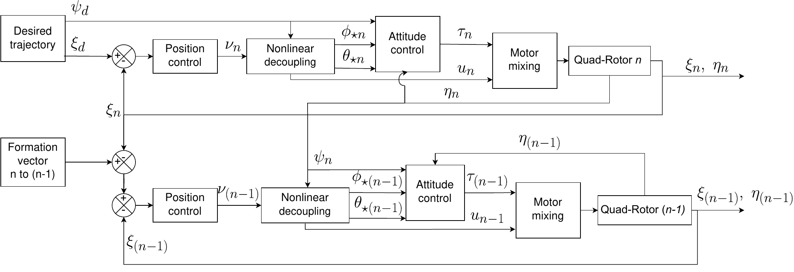
4 Simulation and experimental results.
This chapter presents the simulation and experimental results obtained by applying different controllers to maintain the formation of nano quadrotors. The performance of the PID, TC, STA, STSMC and NTSMC controllers is analyzed in terms of trajectories and yaw angle, as well as the formation errors and control effort of each agent.
4.1 Simulation results
The following disturbances are considered for the simulations: \[\begin{split} d_x &= 0.3 \operatorname{sen}(0.4t), \\ d_y &= 0.3 \cos(0.4t), \\ d_z &= -0.5 + 0.1 \operatorname{sen}(0.4t) - 0.1 \operatorname{sen}(0.6t) + 0.1 \cos(0.8t), \\ d_\phi &= -0.5 + 0.2 \operatorname{sen}(0.4t) - 0.2 \operatorname{sen}(0.6t) + 0.2 \cos(0.6t), \\ d_\theta &= -0.5 + 0.2 \cos(0.8t) - 0.2 \operatorname{sen}(0.4t) + 0.2 \cos(0.8t), \\ d_\psi &= -0.5 + 0.2 \cos(0.8t) - 0.2 \operatorname{sen}(0.6t) + 0.2 \cos(0.8t). \end{split}\]
Five agents are considered (\(n=5\)). The rotational drag coefficients are \(a_{li}=1.52\times10^{-7}\) [Ns/rad], with \(l = \phi, \theta, \psi\); the aerodynamic damping coefficients are \(a_{x i} = a_{y i} = a_{z i} = 2.47\times10^{-7}\) [Ns/kgm]; the moments of inertia of the agents are \(J_{xi}=9.827\times10^{-5}\) [kg\(\cdot\) m\(^2\)], \(J_{yi}=8.185\times10^{-5}\) [kg\(\cdot\) m\(^2\)], \(J_{zi}=9.613\times10^{-5}\) [kg\(\cdot\) m\(^2\)]; the mass of the agents is \(m_i= 0.032\) [kg].
The desired trajectories of the leader (\(R_5\)) are given by: \[\begin{split} x_d &= (\arctan(15) + \arctan(t - 15)) \cos\left(\frac{\pi}{5}t\right), \\ y_d &= (\arctan(15) + \arctan(t - 15)) \operatorname{sen}\left(\frac{\pi}{5}t\right), \\ z_d &= 1 + \tan(t - 5) - 2.5, \\ \psi_d &= 0. \end{split}\label{eq: Trayectoria lider} \tag{18}\]
The formation vectors are the following: \(C_{51} = [1 \quad 1 \quad 0]^\top\), \(C_{52} = [-1 \quad 1 \quad 0]^\top\), \(C_{53} = [1 \quad -1 \quad 0]^\top\), \(C_{54} = [-1 \quad -1 \quad 0]^\top\). The selected gains of the controllers are shown in Table 6, while the gains of the observers are \(\boldsymbol{\hat{K}}_{1i} = 4.0716I_{3}\), \(\boldsymbol{\hat{K}}_{2i} = 2.3717I_{3}\), \(\boldsymbol{\hat{K}}_{3i} = 2.75I_{3}\), \(\boldsymbol{\hat{K}}_{4i} = 4.3267I_{3}\), \(\boldsymbol{\hat{K}}_{5i} = 2.5981I_{3}\) and \(\boldsymbol{\hat{K}}_{6i} = 3.3I_{3}\), for all \(i = \overline{1,n}\), with \(I_{3}\) as an identity matrix of dimension \(3 \times 3\).
Figure 5 shows the trajectory of the agents, where agent \(R_5\) is the leader agent, and it is observed that the follower agents preserve the desired formation with respect to the leader; the figure corresponds to the NTSMC controller, since it had the best performance in terms of position error, and moreover the five controllers show a similar behavior and the difference observed visually is minimal.
To illustrate the performance of the controllers, the following performance index is proposed: \[f_{RMS}(t) = \bigg( \frac{1}{\Delta T} \int_{t-\Delta T}^{t} \| f(\sigma)\|^2 d\sigma \bigg)^{\frac{1}{2}} \tag{19}\] where \(f_{RMS}: \mathbb{R} \rightarrow \mathbb{R}_{\geq 0}\) represents the root-mean-square error of the function \(f: \mathbb{R} \rightarrow \mathbb{R}^n\). The results of the performance indices of the average formation errors in (\(x_i, y_i, z_i, \psi_i\)) are shown in Figure 6, and the control signals (\(u_i, \tau_{\phi i}, \tau_{\theta i}, \tau_{\psi i}\)) in Figure 7, with \(\Delta T = 2\). Tables 4 and 5 show the properties of the average, of the performance index of the signals, of the errors and of control. Regarding the errors, it is observed that the NTSMC controller has, in general, the best performance; however, regarding the performance index of the inputs, the STA controller is the best.
| Controller | \(e_{x i}-RMS\) | \(e_{y i}-RMS\) | \(e_{z i}-RMS\) | \(e_{\psi i}-RMS\) |
|---|---|---|---|---|
| PID | \(4.062 \times 10^{-4}\) | \(1.455 \times 10^{-3}\) | \(\mathbf{8.462 \times 10^{-4}}\) | \(3.801 \times 10^{-5}\) |
| TC | \(1.660 \times 10^{-4}\) | \(6.649 \times 10^{-4}\) | \(8.484 \times 10^{-4}\) | \(9.132 \times 10^{-8}\) |
| STA | \(4.359 \times 10^{-4}\) | \(5.997 \times 10^{-4}\) | \(8.485 \times 10^{-4}\) | \(1.895 \times 10^{-6}\) |
| STSMC | \(3.692 \times 10^{-4}\) | \(1.051 \times 10^{-3}\) | \(8.485 \times 10^{-4}\) | \(\mathbf{1.143 \times 10^{-8}}\) |
| NTSMC | \(\mathbf{1.030 \times 10^{-4}}\) | \(\mathbf{2.685 \times 10^{-4}}\) | \(8.484 \times 10^{-4}\) | \(5.183 \times 10^{-6}\) |
| Controller | \(u_{ i}-RMS\) | \(\tau_{\phi i}-RMS\) | \(\tau_{\theta i}-RMS\) | \(\tau_{\psi i}-RMS\) |
|---|---|---|---|---|
| PID | \(0.329\) | \(1.829 \times 10^{-4}\) | \(\mathbf{5.922 \times 10^{-5}}\) | \(\mathbf{5.776 \times 10^{-5}}\) |
| TC | \(0.329\) | \(2.957 \times 10^{-4}\) | \(2.458 \times 10^{-4}\) | \(6.698 \times 10^{-5}\) |
| STA | \(0.329\) | \(\mathbf{1.149 \times 10^{-4}}\) | \(8.903 \times 10^{-5}\) | \(5.777 \times 10^{-5}\) |
| STSMC | \(0.329\) | \(1.291 \times 10^{-4}\) | \(1.074 \times 10^{-4}\) | \(5.781 \times 10^{-5}\) |
| NTSMC | \(0.329\) | \(3.499 \times 10^{-3}\) | \(2.903 \times 10^{-3}\) | \(1.208 \times 10^{-3}\) |
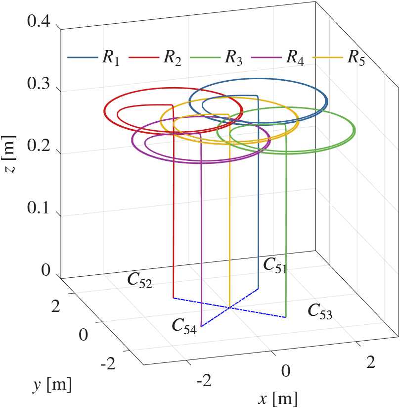
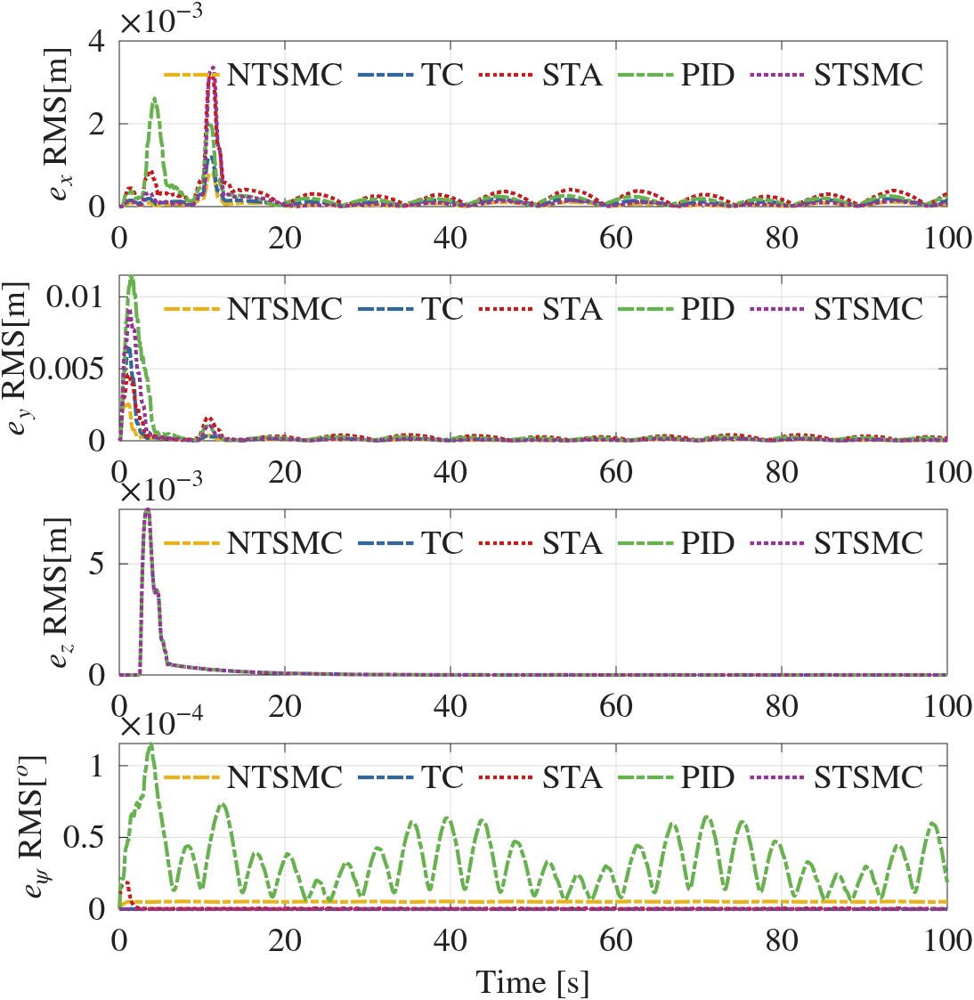
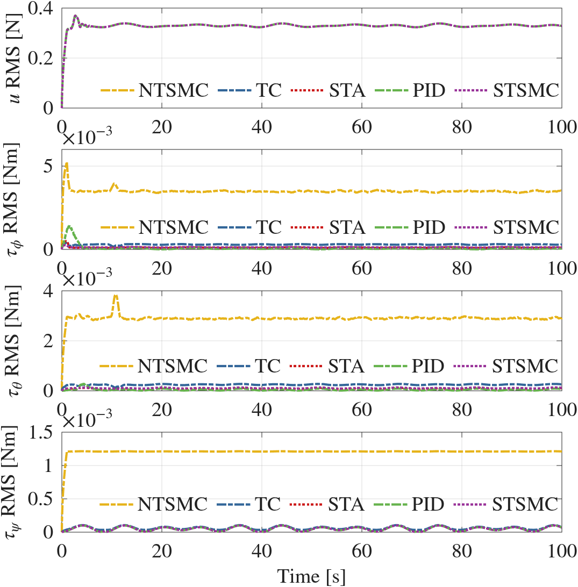
| Parameters | ||||||
|---|---|---|---|---|---|---|
| Controller | \(k_{0xi}\) | \(k_{0yi}\) | \(k_{0zi}\) | \(k_{\phi0i}\) | \(k_{\theta0 i}\) | \(k_{\psi 0i}\) |
| PID | 5.0 | 5.0 | 20.0 | 18.0 | 18.0 | 20.0 |
| STA | 5.0 | 5.0 | 20.0 | 12.0 | 12.0 | 2.8 |
| TC | 5.0 | 5.0 | 20.0 | 44.3147 | 44.3147 | 29.0099 |
| STSMC | 5.0 | 5.0 | 20.0 | 2.6 | 2.6 | 2.1 |
| NTSMC | 5.0 | 5.0 | 20.0 | 0.1051 | 0.1051 | 0.1054 |
| Controller | \(k_{1xi}\) | \(k_{1yi}\) | \(k_{1zi}\) | \(k_{\phi1 i}\) | \(k_{\theta1 i}\) | \(k_{\psi1 i}\) |
| PID | 28.5 | 28.5 | 155.2 | 180.0 | 180.0 | 200.0 |
| STA | 28.5 | 28.5 | 155.2 | 12.0934 | 12.0934 | 0.5293 |
| TC | 28.5 | 28.5 | 155.2 | 23.0434 | 23.0434 | 16.7705 |
| STSMC | 28.5 | 28.5 | 155.2 | 10.1181 | 10.1181 | 4.3732 |
| NTSMC | 28.5 | 28.5 | 155.2 | 322.6356 | 322.6356 | 321.3278 |
| Controller | \(k_{2xi}\) | \(k_{2yi}\) | \(k_{2zi}\) | \(k_{\phi2 i}\) | \(k_{\theta2 i}\) | \(k_{\psi2 i}\) |
| PID | 5.5 | 5.5 | 10.0 | 10.0 | 10.0 | 10.0 |
| STA | 5.5 | 5.5 | 10.0 | 71.50 | 71.50 | 0.1370 |
| TC | 5.5 | 5.5 | 10.0 | 5.4280 | 5.4280 | 2.8750 |
| STSMC | 5.5 | 5.5 | 10.0 | 50.05 | 50.05 | 9.350 |
| NTSMC | 5.5 | 5.5 | 10.0 | 633.8 | 633.8 | 630.0 |
| Controller | \(k_{3xi}\) | \(k_{3yi}\) | \(k_{3zi}\) | \(k_{\phi 3i}\) | \(k_{\theta 3i}\) | \(k_{\psi3 i}\) |
| PID | \(-\) | \(-\) | \(-\) | \(-\) | \(-\) | \(-\) |
| STA | \(-\) | \(-\) | \(-\) | \(-\) | \(-\) | \(-\) |
| TC | \(-\) | \(-\) | \(-\) | 2.5960 | 2.5960 | 1.3750 |
| STSMC | \(-\) | \(-\) | \(-\) | \(-\) | \(-\) | \(-\) |
| NTSMC | \(-\) | \(-\) | \(-\) | \(-\) | \(-\) | \(-\) |
4.2 Experimental results
To demonstrate the effectiveness of the proposed controllers, these were implemented on a system of three nano quadrotors. The system consists of a virtual leader and two followers. The experimental platform is described in Subsection 4.2.1.
4.2.1 Experimental Platform
The Crazyflie nano quadrotor platform consists of three main components, as shown in Figure 8:
Optitrack Motion Capture positioning system.
Ground station.
Crazyflie nano quadrotors.
The operation of the experimental platform is detailed in Appendix A.
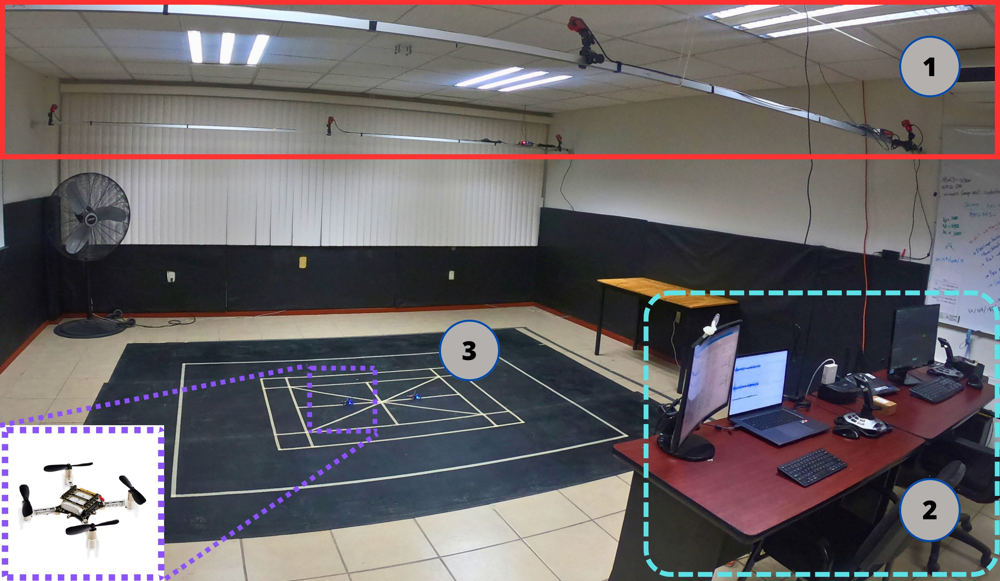
4.2.2 Experimental Validation
In the validation, the attitude controllers (13), (14), (15), (17) and (16) and the position controller (10a), (11) were implemented on the Crazyflie nano quadrotors; it should be noted that the observers were not used in the experiments. The position feedback was obtained through the Optitrack motion capture system, transmitted via ROS-VRPN to the UAVs together with the desired trajectory from an external computer (ground station). The trajectory of the virtual leader (\(R_3\)) was defined according to (18). The formation vectors are the following: \[\begin{split} C_{31} &= [-0.2 \quad 0 \quad 0]^\top, \\ C_{32} &= [ 0.2 \quad 0 \quad 0]^\top. \\ \end{split}\]
4.2.2.1 Experimental Results
Figures 9, 10, 11, 12 and 13 show the results obtained when applying the PID, TC, STA, STSMC and NTSMC controllers to the system, respectively. In them, it can be seen that the controllers manage to maintain the desired formation of the agents.
The figures present the average trajectory of the agents \(R_1\), \(R_2\) and \(R_3\) on the axes \(x\), \(y\) and \(z\). These trajectories were obtained after performing ten experiments for each type of controller. The behavior of the yaw angle is also included. The gains selected for each controller are detailed in Table 7.
To evaluate the performance of each controller, the average formation error (in RMS) of the follower agents \(R_1\) and \(R_2\) (\(x, y, z, \psi\)) was calculated for each controller. In addition, the minimum, mean and maximum RMS performance indices were considered for each agent. The best results are highlighted in bold. Data from an initial time \(t_0 = 10\) [s] and a final time \(t_f = 60\) [s] were considered to prevent the indices from being affected by the initial conditions of the nano quadrotors. The results are reflected in Figures 14 and 15, which show the RMS errors of (\(x_i\), \(y_i\), \(z_i\), \(\psi_i\)) of position and yaw for each agent. The average control inputs of (\(u_i\), \(\tau_{\phi i}\), \(\tau_{\theta i}\), \(\tau_{\psi i}\)) in RMS for each controller are in Figures 16 and 17.
Tables 8-11 show the performance indices of the position and yaw error. A very similar performance is observed among the controllers, but the NTSMC controller is the one that shows the worst performance. Tables 12-15 present the performance indices corresponding to the control inputs. The NTSMC controller is the one with the worst performance. In Tables 16-19, which represent the performance indices of the position and yaw errors of agent \(R_2\), it is observed that the STA controller has the best performance. While Tables 20-23 show the performance indices of the control inputs of agent \(R_2\), where a similar behavior is observed among the controllers.
It is observed that the controllers present notably similar behaviors among themselves. However, when comparing the indices, it is concluded that the controllers with the best performance are PID and STA, while the NTSMC controller is the one that shows the worst performance.
It is important to highlight that their performance can be affected by several external factors, such as the loss of information from the ground station, the limitations of the hardware of the computer to which they are connected, and the restrictions in the processing capacity of the microprocessor of the nano quadrotors, especially when the controller demands a high computational load. The initial conditions of the agent can also influence its performance. Despite these complications, the effectiveness of the controllers in maintaining the desired formation has been validated.
The control signals of the Crazyflie nano quadrotor must be sent in RPM (revolutions per minute). To perform the conversion of the control input, which is in Newtons, to RPM, a function described in [34] is used. The details of this function are explained in Appendix A.1.
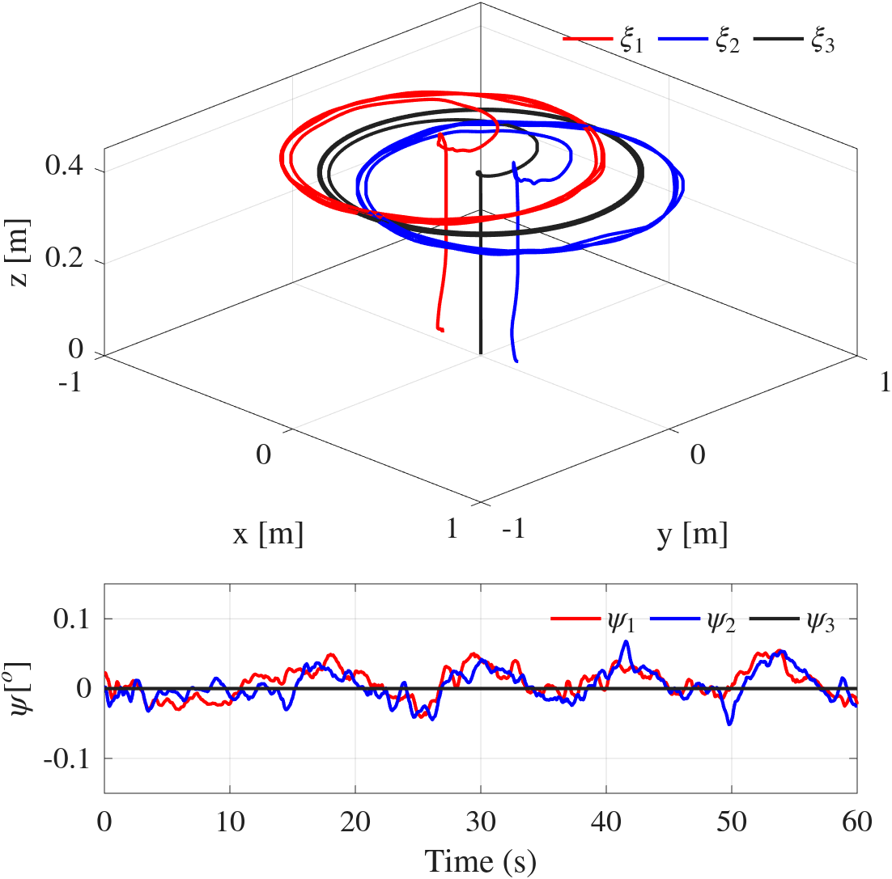
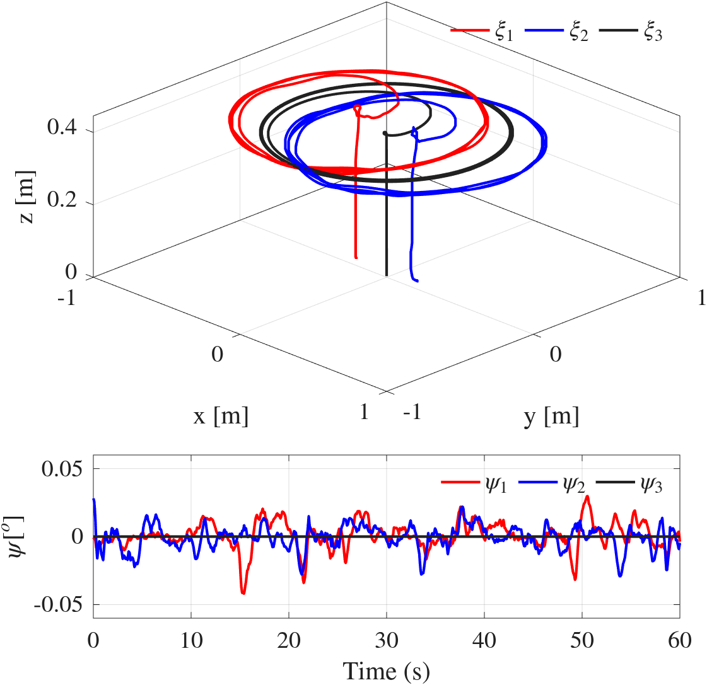
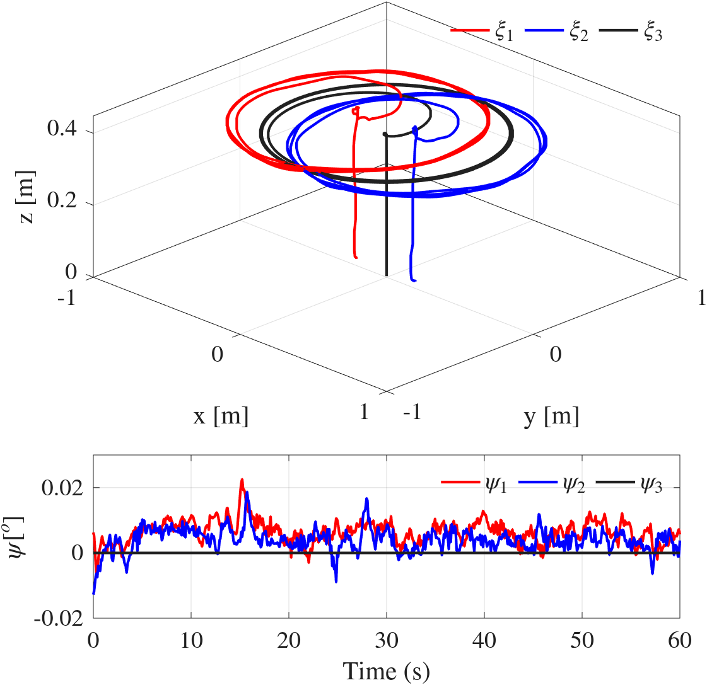
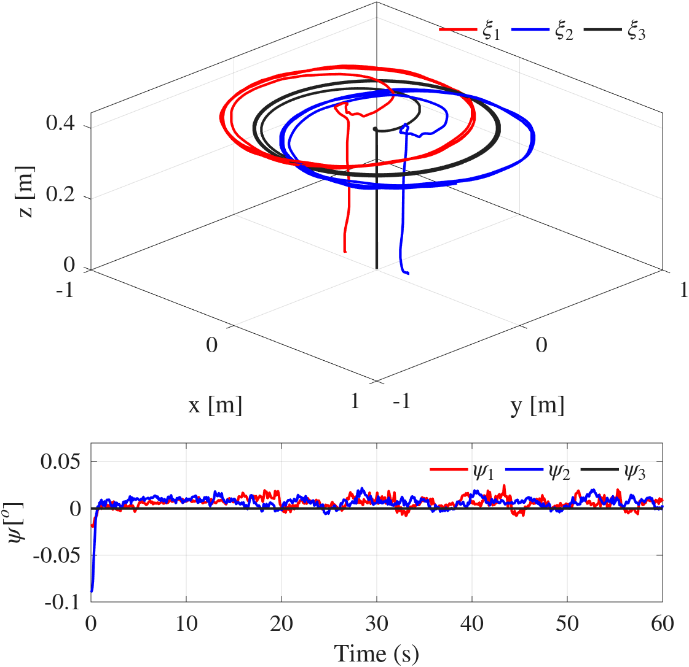
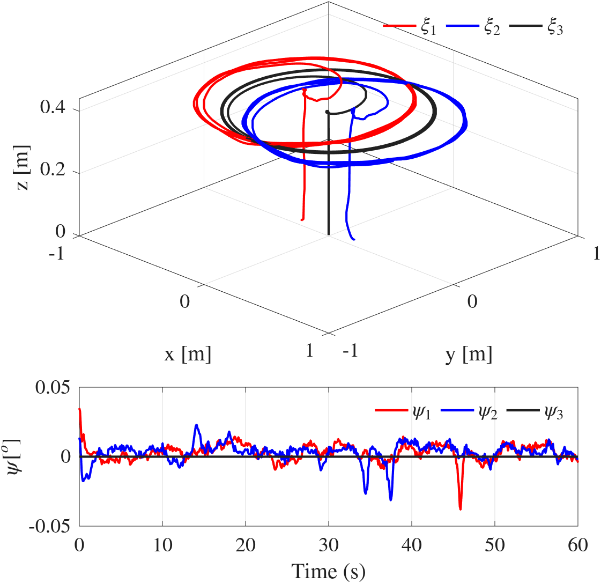
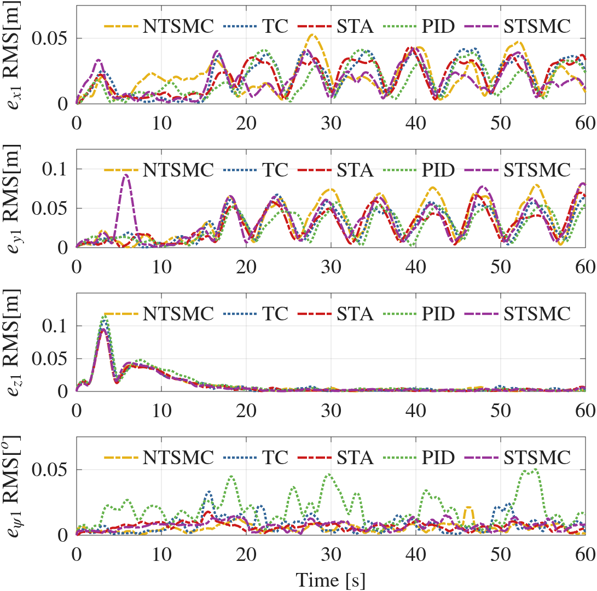
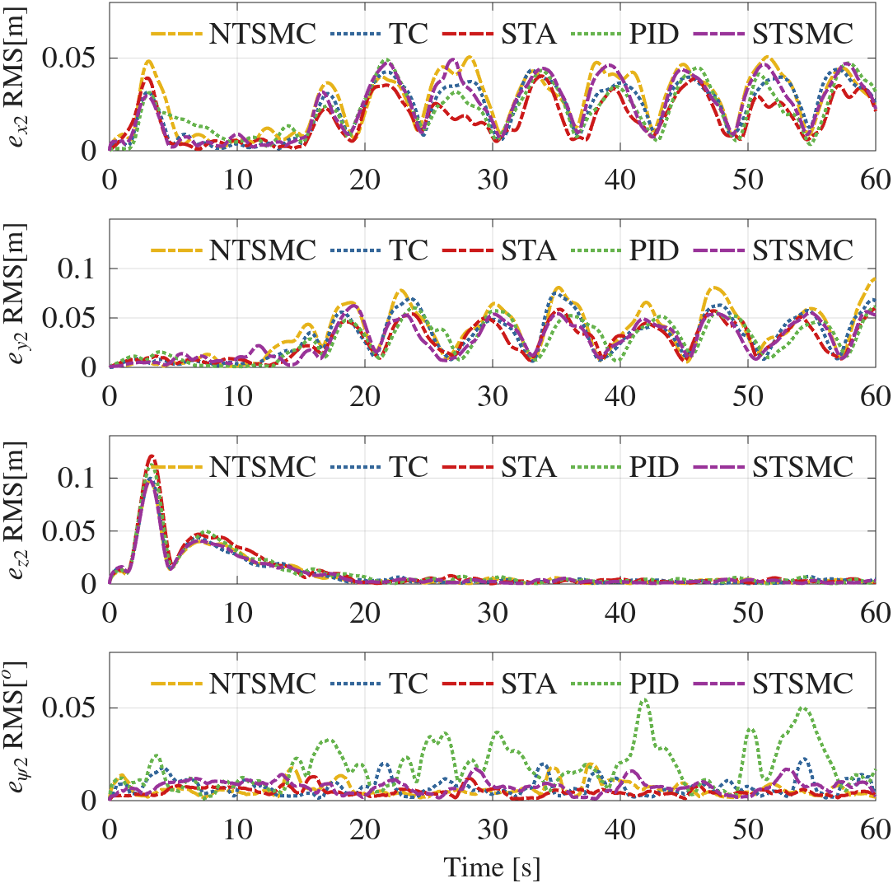
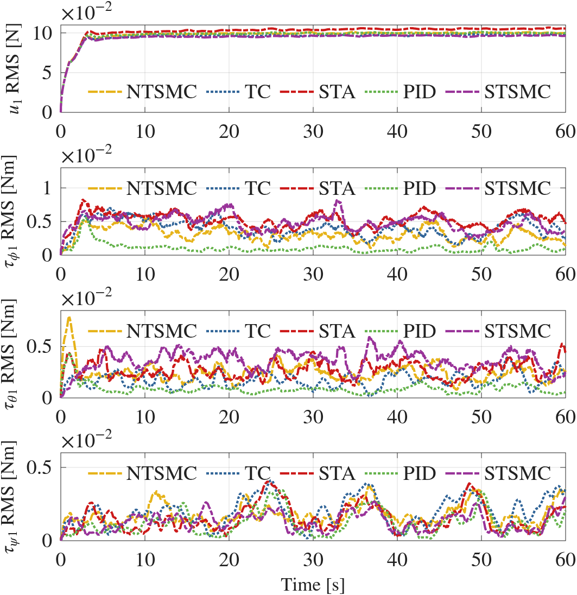
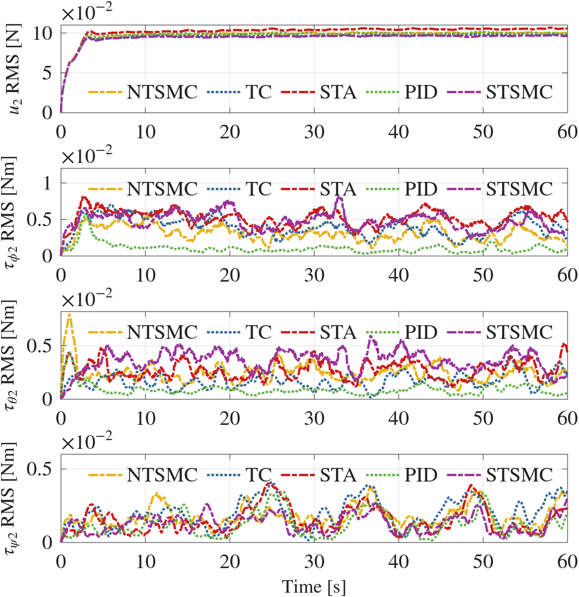
| Parameters | ||||||
|---|---|---|---|---|---|---|
| Controller | \(k_{0xi}\) | \(k_{0yi}\) | \(k_{0zi}\) | \(k_{\phi0i}\) | \(k_{\theta0 i}\) | \(k_{\psi 0i}\) |
| PID | 1.0 | 1.0 | 0.1 | 3.0 | 3.0 | 2.0 |
| STA | 1.0 | 1.0 | 0.1 | 0.0035 | 0.0035 | 0.0027 |
| TC | 1.0 | 1.0 | 0.1 | 2.0 | 2.0 | 1.0 |
| STSMC | 1.0 | 1.0 | 0.1 | 0.0035 | 0.0035 | 0.0027 |
| NTSMC | 1.0 | 1.0 | 0.1 | 0.1051 | 0.1051 | 10.8894 |
| Controller | \(k_{1xi}\) | \(k_{1yi}\) | \(k_{1zi}\) | \(k_{\phi1 i}\) | \(k_{\theta1 i}\) | \(k_{\psi1 i}\) |
| PID | 10.95 | 10.95 | 12.15 | 14.95 | 14.95 | 12.15 |
| STA | 10.95 | 10.95 | 12.15 | 1.4031 | 1.4031 | 0.5293 |
| TC | 10.95 | 10.95 | 12.15 | 12.0 | 12.0 | 8.0 |
| STSMC | 10.95 | 10.95 | 12.15 | 1.4031 | 1.4031 | 0.5293 |
| NTSMC | 10.95 | 10.95 | 12.15 | 6.46 | 6.46 | 4.7247 |
| Controller | \(k_{2xi}\) | \(k_{2yi}\) | \(k_{2zi}\) | \(k_{\phi2 i}\) | \(k_{\theta2 i}\) | \(k_{\psi2 i}\) |
| PID | 6.5 | 6.5 | 3.0 | 10.5 | 10.5 | 7.0 |
| STA | 6.5 | 6.5 | 3.0 | 0.9625 | 0.9625 | 0.8360 |
| TC | 6.5 | 6.5 | 3.0 | 3.0 | 3.0 | 2.0 |
| STSMC | 6.5 | 6.5 | 3.0 | 0.9625 | 0.9625 | 0.8360 |
| NTSMC | 6.5 | 6.5 | 3.0 | 1.6 | 1.6 | 1.0 |
| Controller | \(k_{3xi}\) | \(k_{3yi}\) | \(k_{3zi}\) | \(k_{\phi 3i}\) | \(k_{\theta 3i}\) | \(k_{\psi3 i}\) |
| PID | \(-\) | \(-\) | \(-\) | \(-\) | \(-\) | \(-\) |
| STA | \(-\) | \(-\) | \(-\) | \(-\) | \(-\) | \(-\) |
| TC | \(-\) | \(-\) | \(-\) | 1.0 | 1.0 | 1.0 |
| STSMC | \(-\) | \(-\) | \(-\) | \(-\) | \(-\) | \(-\) |
| NTSMC | \(-\) | \(-\) | \(-\) | \(-\) | \(-\) | \(-\) |
| Controller | \(\text{min}(e_{x 1}-RMS)\) | \(e_{x 1}-RMS\) | \(\text{max}(e_{x 1}-RMS)\) |
|---|---|---|---|
| PID | \(0.0018\) | \(0.0232\) | \(\mathbf{0.0412}\) |
| TC | \(\mathbf{0.0012}\) | \(0.0264\) | \(0.0420\) |
| STA | \(0.0036\) | \(0.0254\) | \(0.0432\) |
| STSMC | \(\mathbf{0.0012}\) | \(\mathbf{0.0212}\) | \(0.0426\) |
| NTSMC | \(0.0033\) | \(0.0250\) | \(0.0527\) |
| Controller | \(\text{min}(e_{y 1}-RMS)\) | \(e_{y 1}-RMS\) | \(\text{max}(e_{y 1}-RMS)\) |
|---|---|---|---|
| PID | \(\mathbf{0.0014}\) | \(\mathbf{0.0348}\) | \(\mathbf{0.0612}\) |
| TC | \(0.0028\) | \(0.0383\) | \(0.0673\) |
| STA | \(0.0041\) | \(0.0363\) | \(0.0698\) |
| STSMC | \(0.0027\) | \(0.0409\) | \(0.0816\) |
| NTSMC | \(0.0039\) | \(0.0459\) | \(0.0821\) |
| Controller | \(\text{min}(e_{z 1}-RMS)\) | \(e_{z 1}-RMS\) | \(\text{max}(e_{z 1}-RMS)\) |
|---|---|---|---|
| PID | \(0.0006\) | \(0.0085\) | \(0.0331\) |
| TC | \(\mathbf{0.00038}\) | \(0.0066\) | \(\mathbf{0.0254}\) |
| STA | \(0.0005\) | \(0.0064\) | \(0.0296\) |
| STSMC | \(0.00045\) | \(\mathbf{0.0060}\) | \(0.0261\) |
| NTSMC | \(0.00042\) | \(0.0065\) | \(0.0283\) |
| Controller | \(\text{min}(e_{\psi 1}-RMS)\) | \(e_{\psi 1}-RMS\) | \(\text{max}(e_{\psi 1}-RMS)\) |
|---|---|---|---|
| PID | \(0.0032\) | \(0.0230\) | \(0.0502\) |
| TC | \(\mathbf{0.0008}\) | \(0.0109\) | \(0.0332\) |
| STA | \(0.0016\) | \(0.0074\) | \(0.0179\) |
| STSMC | \(0.0012\) | \(0.0084\) | \(\mathbf{0.0151}\) |
| NTSMC | \(0.00093\) | \(\mathbf{0.0068}\) | \(0.0213\) |
| Controller | \(\text{min}(u_{ 1}-RMS)\) | \(u_{ 1}-RMS\) | \(\text{max}(u_{ 1}-RMS)\) |
|---|---|---|---|
| PID | \(0.0987\) | \(0.1000\) | \(0.1015\) |
| TC | \(0.0956\) | \(0.0971\) | \(0.0994\) |
| STA | \(0.0946\) | \(\mathbf{0.0963}\) | \(\mathbf{0.0979}\) |
| STSMC | \(\mathbf{0.0941}\) | \(0.0965\) | \(0.0982\) |
| NTSMC | \(0.0961\) | \(0.0980\) | \(0.1000\) |
| Controller | \(\text{min}(\tau_{\phi1}-RMS)\) | \(\tau_{\phi1}-RMS\) | \(\text{max}(\tau_{\phi1}-RMS)\) |
|---|---|---|---|
| PID | \(\mathbf{0.0003}\) | \(\mathbf{0.0013}\) | \(\mathbf{0.0025}\) |
| TC | \(0.0017\) | \(0.0043\) | \(0.0071\) |
| STA | \(0.00096\) | \(0.0037\) | \(0.0061\) |
| STSMC | \(0.0027\) | \(0.0060\) | \(0.0085\) |
| NTSMC | \(0.0011\) | \(0.0032\) | \(0.0053\) |
| Controller | \(\text{min}(\tau_{\theta 1}-RMS)\) | \(\tau_{\theta 1}-RMS\) | \(\text{max}(\tau_{\theta 1}-RMS)\) |
|---|---|---|---|
| PID | \(0.00052\) | \({0.0018}\) | \(\mathbf{0.0029}\) |
| TC | \(0.00053\) | \(\mathbf{0.0017}\) | \(0.0040\) |
| STA | \(0.0013\) | \(0.0037\) | \(0.0058\) |
| STSMC | \(\mathbf{0.0010}\) | \(0.0032\) | \(0.0053\) |
| NTSMC | \(\mathbf{0.0010}\) | \(0.0023\) | \(0.0043\) |
| Controller | \(\text{min}(\tau_{\psi1}-RMS)\) | \(\tau_{\psi1}-RMS\) | \(\text{max}(\tau_{\psi1}-RMS)\) |
|---|---|---|---|
| PID | \(0.00057\) | \(\mathbf{0.0013}\) | \(0.0034\) |
| TC | \(\mathbf{0.0002}\) | \(0.0022\) | \(0.0044\) |
| STA | \(0.00056\) | \(0.0024\) | \(0.0041\) |
| STSMC | \(0.00037\) | \(\mathbf{0.0013}\) | \(\mathbf{0.0027}\) |
| NTSMC | \(0.0004\) | \(0.0017\) | \(0.0037\) |
| Controller | \(\text{min}(e_{x 2}-RMS)\) | \(e_{x 2}-RMS\) | \(\text{max}(e_{x 2}-RMS)\) |
|---|---|---|---|
| PID | \(0.0025\) | \(0.0269\) | \(0.0492\) |
| TC | \(\mathbf{0.0011}\) | \(0.0287\) | \(0.0438\) |
| STA | \(0.0014\) | \(\mathbf{0.0218}\) | \(\mathbf{0.0403}\) |
| STSMC | \(0.0020\) | \(0.0303\) | \(0.0492\) |
| NTSMC | \(0.0047\) | \(0.0321\) | \(0.0507\) |
| Controller | \(\text{min}(e_{y 2}-RMS)\) | \(e_{y 2}-RMS\) | \(\text{max}(e_{y 2}-RMS)\) |
|---|---|---|---|
| PID | \(\mathbf{0.0006}\) | \(0.0359\) | \(0.0614\) |
| TC | \(0.0031\) | \(0.0399\) | \(0.0751\) |
| STA | \(0.0020\) | \(\mathbf{0.0340}\) | \(\mathbf{0.0595}\) |
| STSMC | \(0.0024\) | \(0.0356\) | \(0.0624\) |
| NTSMC | \(0.0017\) | \(0.0461\) | \(0.0896\) |
| Controller | \(\text{min}(e_{z 2}-RMS)\) | \(e_{z 2}-RMS\) | \(\text{max}(e_{z 2}-RMS)\) |
|---|---|---|---|
| PID | \(\mathbf{0.004}\) | \(0.0078\) | \(0.0303\) |
| TC | \(\mathbf{0.0004}\) | \(\mathbf{0.0068}\) | \(0.0275\) |
| STA | \(\mathbf{0.0004}\) | \(0.0084\) | \(0.0347\) |
| STSMC | \(0.00058\) | \(\mathbf{0.0068}\) | \(\mathbf{0.0263}\) |
| NTSMC | \(0.00054\) | \(0.0070\) | \(0.0304\) |
| Controller | \(\text{min}(e_{ \psi_ 2}-RMS)\) | \(e_{ \psi_ 2}-RMS\) | \(\text{max}(e_{ \psi_ 2}-RMS)\) |
|---|---|---|---|
| PID | \(0.0025\) | \(0.0198\) | \(0.0545\) |
| TC | \(0.0013\) | \(0.0071\) | \(0.0225\) |
| STA | \(\mathbf{0.00095}\) | \(\mathbf{0.0046}\) | \(\mathbf{0.0129}\) |
| STSMC | \(0.0011\) | \(0.0075\) | \(0.0171\) |
| NTSMC | \(0.0016\) | \(0.0062\) | \(0.0197\) |
| Controller | \(\text{min}(u_{ 2}-RMS)\) | \(u_{ 2}-RMS\) | \(\text{max}(u_{ 2}-RMS)\) |
|---|---|---|---|
| PID | \(0.0981\) | \(0.0995\) | \(0.1013\) |
| TC | \(0.0957\) | \(0.0971\) | \(0.0996\) |
| STA | \(0.1010\) | \(0.1042\) | \(0.1068\) |
| STSMC | \(\mathbf{0.0943}\) | \(\mathbf{0.0961}\) | \(\mathbf{0.0974}\) |
| NTSMC | \(0.0977\) | \(0.0996\) | \(0.1012\) |
| Controller | \(\text{min}(\tau_{\phi2}-RMS)\) | \(\tau_{\phi2} -RMS\) | \(\text{max}(\tau_{\phi2}-RMS)\) |
|---|---|---|---|
| PID | \(\mathbf{0.0003}\) | \(\mathbf{0.00093}\) | \(\mathbf{0.0020}\) |
| TC | \(0.0016\) | \(0.0040\) | \(0.0063\) |
| STA | \(0.0029\) | \(0.0052\) | \(0.0072\) |
| STSMC | \(0.0023\) | \(0.0049\) | \(0.0082\) |
| NTSMC | \(0.0011\) | \(0.0031\) | \(0.0057\) |
| Controller | \(\text{min}(\tau_{\theta 2}-RMS)\) | \(\tau_{\theta 2} -RMS\) | \(\text{max}(\tau_{\theta 2}-RMS)\) |
|---|---|---|---|
| PID | \(0.00026\) | \(\mathbf{0.0008}\) | \(\mathbf{0.0016}\) |
| TC | \(\mathbf{0.00019}\) | \(0.0017\) | \(0.0040\) |
| STA | \(0.0011\) | \(0.0027\) | \(0.0053\) |
| STSMC | \(0.0015\) | \(0.0037\) | \(0.0059\) |
| NTSMC | \(0.0008\) | \(0.0024\) | \(0.0042\) |
| Controller | \(\text{min}(\tau_{\psi2}-RMS)\) | \(\tau_{\psi2} -RMS\) | \(\text{max}(\tau_{\psi2}-RMS)\) |
|---|---|---|---|
| PID | \(\mathbf{0.00015}\) | \(\mathbf{0.0013}\) | \(0.0035\) |
| TC | \(0.00017\) | \(0.0021\) | \(0.0041\) |
| STA | \(0.0003\) | \(0.0016\) | \(0.0040\) |
| STSMC | \(0.00028\) | \(0.0013\) | \(\mathbf{0.0030}\) |
| NTSMC | \(0.00062\) | \(0.0019\) | \(0.0038\) |
5 Conclusions
This thesis provides a solution to address the formation problem of a group of nano quadrotors. The robust controller consists of a finite-time sliding-mode observer, PID controllers and continuous sliding-mode controllers. It should be noted that the observers were not used in the experimental validation. In addition, a platform was developed to perform experiments with multi-quadrotor systems.
The experiments performed validated the following controllers PID, TC, STA, STSMC, and NTSMC, on a multi-agent system of nano quadrotors, considering three agents, a virtual leader and two follower agents using the Crazyflie nano quadrotors. To demonstrate the effectiveness of the controllers, ten experiments were performed and an average of the obtained results was computed.
The trajectories of the agents in the coordinates \(x\), \(y\) and \(z\), as well as the behavior of the yaw angle \(\psi\), indicate that the controllers are capable of carrying out the formation tasks.
It is important to highlight that, although the controllers demonstrated similar behaviors among themselves, the variability in their performance can be influenced by several factors, such as the loss of information or the delay in sending data from the ground station to the agents.
The main contributions of this work lie in the experimental validation of the controllers and the development of the multi-quadrotor platform.
In the results of the experimental validation, it was observed that the STSMC controller showed a better performance compared to the other validated controllers. On the other hand, the NTSMC controller had the worst performance. It is important to mention that during the simulations observers were used, but in the validation they were not used. This difference in the implementation could have influenced the results and should be considered in the future to compare the performance of the controllers.
Future work
With the nano quadrotor platform already in operation, it is possible to start new research work with multi-agent system controllers (using vision, artificial intelligence, other robust controllers, etc.), including the implementation of the observers and the injection of external disturbances.
Academic Production
Papers submitted to National Conferences
Julio Cesar Rodríguez-Cervantes, Alejandro Dzul and Héctor Ríos, “Formation Control Design for Multi-Quad-Rotors with Experimental Validation”, Submitted to the Congreso Nacional de Control Automático 2023.
Julio Cesar Rodríguez-Cervantes, Alejandro Dzul and Héctor Ríos, “Formation Control Design based on Sliding Modes for a Group of Quadrotors”, Submitted to the Mexican Congress of Robotics COMRob 2023.
A Multi-Quadrotor Platform
The ROS programming of the controllers is based on the works represented in the repositories crazyflie_ros [35] and vrpn_client_ros. The repository crazyflie_ros provides the connection foundations of the positioning system and the Crazyflie, as well as flight examples in regulation mode for a Crazyflie, among other applications. It also includes a PID position controller which runs from a ground station. The repository vrpn_client_ros contains the communication libraries with the VRPN positioning system, compatible with the Optitrack Motion Capture system.
The original repositories had to be updated, since when using another VRPN positioning system, the established frames are different from the frames of the Optitrack motion capture system. In addition, the programming of the position controllers is performed on board the microprocessor of the nano quadrotor; another aspect to highlight is that since the code is fragmented into multiple programs, depending on the characteristics of the ground station, it slowed down the sending of the signals.
Part of the work carried out was the modification of the libraries of the Crazyradio communication antenna, to send the desired trajectories with the structure of the proposed controller, \((x, y, z, \psi, \dot{x}, \dot{y}, \dot{z}, \dot{\psi}, \ddot{x}, \ddot{y}, \ddot{z}, \ddot{\psi})\), since by default it only has a limited group of setpoint input structures. In addition, all the programming was migrated to the Python language to have a standardization, and unnecessary codes were removed. Thanks to this modification, it was possible to perform the position control on board the microcontroller of the nano quadrotor, which allowed improving the communication with the ground station, achieving better communication. This was notably reflected in the experiments, since the noise generated by signal losses was considerably reduced; moreover, this modification extends the use of formation tasks with other types of positioning systems, thus obtaining improvements in this sense, since the original repositories are only subject to motion capture positioning systems via VRPN.
It is important to highlight that a new repository was created, crazyflie, which is modified for the execution of the experimental tests presented in this document. In addition, the installation steps necessary to run the presented experiments were added. Additionally, a second repository of the nano quadrotor firmware was created, crazyflie-firmware, which contains the attitude and position controllers presented. Both repositories can be accessed at the following links: https://github.com/juliordzcer/crazyflie-firmware/ and https://github.com/juliordzcer/crazyflie.
The operation diagram of the platform is shown in Figure 18. The operation process of the platform begins with a main program, which is executed from a command window in Linux.
roslaunch crazyflie_demo LiderVirtual.launchThe operation process is as follows:
Configuration of the initial parameters:
Configuration of the nano quadrotors: A connection name is assigned to each agent (for example, “crazyflie1” for agent 1 and “crazyflie2” for agent 2) and their initial positions and formation parameters are defined in the coordinates \(x\), \(y\) and \(z\).
Controller selection: One of the available controllers is chosen: the classical sliding-mode controller (SMC), the backstepping controller, TC, STA, NTSMC, STSMC and PID.
Parameters of the desired trajectory: The radius of the trajectory and the height are defined.
Start of the motion capture positioning program: It connects to the server located at IP address 192.168.2.10, which generates a server with the real-time positions of the agents. This program runs at a frequency of 50 Hz, but it is recommended to increase it to 100 Hz if only one agent is used.
Initialization of the virtual leader: The virtual leader waits for a command from the joystick to start its trajectory. The virtual leader program, called LV.py, requires the initial positions and hosts the trajectory to be followed.
Start of the connection with the follower agents: This process is the same for all follower agents and is generated by a group, which contains the programs to be executed for each agent.
The program Crazyflie_add is executed, which establishes the connection between the ground station and the nano quadrotors, using the connection names assigned previously. This program has a waiting time of 5 seconds to ensure that the connection is successful.
Once the connection is established, the joystick is connected to the group of programs for the emergency stop and initialization of the trajectories.
The program Setpoint.py is executed, which knows the position of the leader and adds the desired formation vector, sending it to the nano quadrotor.
The program VRPN.py is executed, responsible for sending the real-time positions of each agent.
It is important to mention that once the connection with the agents is established, the programs interact with each other in real time.
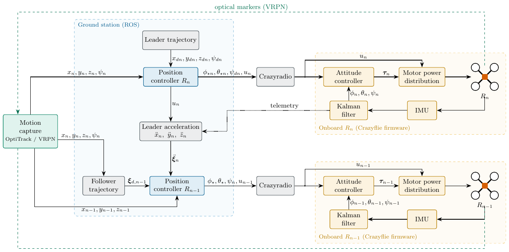
A.0.0.1 Optitrack Motion Capture positioning system.
The Optitrack Motion Capture positioning system tracks and captures 3D movements. It uses reflective markers on the objects and infrared cameras to detect their position and attitude. The software processes the data in real time, and it transmits them to a private server through VRPN (acronym for Virtual-Reality Peripheral Network), which sends the positions and attitudes of the objects of interest [36].
To start the VRPN server of the Optitrack Motion Capture positioning system, the person must follow the following steps:
The Motion Capture software is started and the option Open Camera Calibration is selected (see Figure 19).
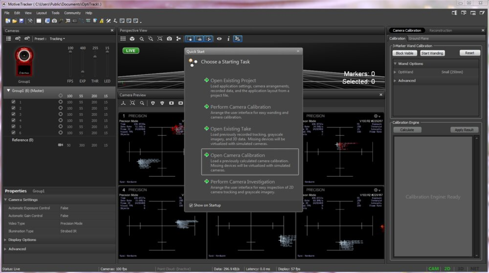
Figure 19. Motive Software Select the most recent calibration file (see Figure 20).
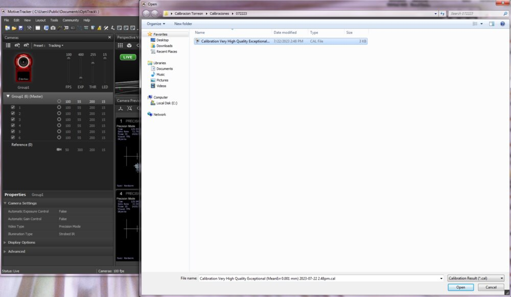
Figure 20. Calibration Selection. Select the markers of the agents (see Figure 21). Once selected, the markers are represented as in Figure 22. It is important to verify that all the markers of the agent are selected.
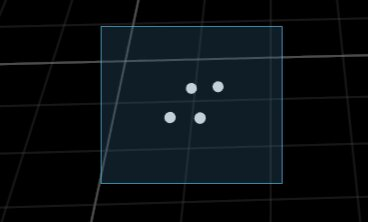
Figure 21. Marker selection 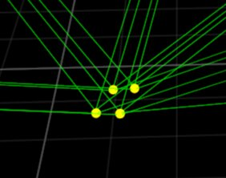
Figure 22. Selected markers Right-click Rigid Body and then Create From Selected Markers (see Figure 23).
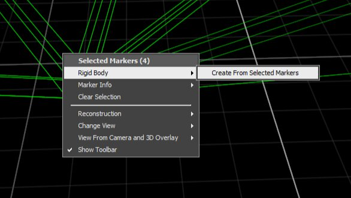
Figure 23. Create a rigid body The names of the rigid bodies are changed to crazyflie1 and crazyflie2. If there are more agents, continue with crazyflie3 and so on (see Figure 24).
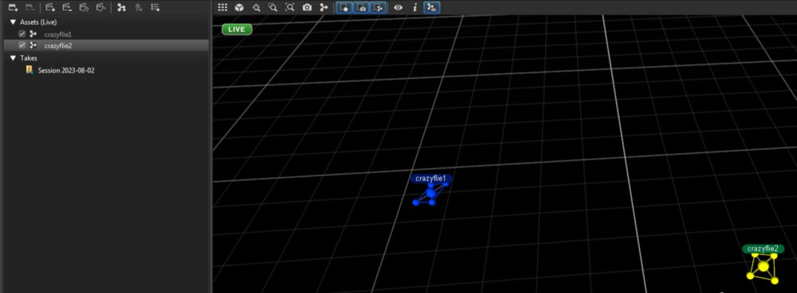
Figure 24. Rename the rigid bodies with the name of the agents To start the server, select the option Streaming Pane, located in the upper left part, which opens a window on the right side of the screen (see Figure 25).
Figure 25. Streaming Pane option Finally, select the option Broadcast Frame Data located in VRPN Streaming Engine (see Figure 26).
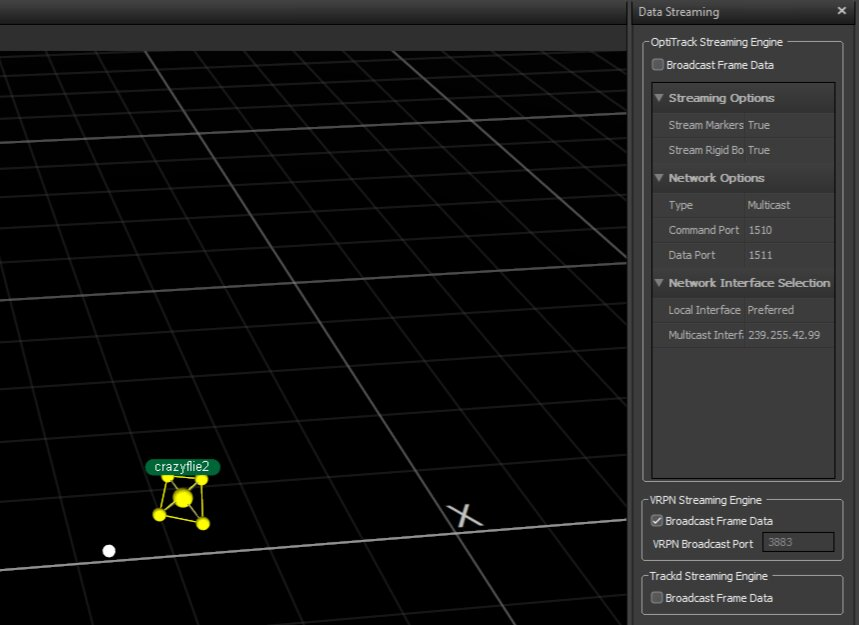
Figure 26. Start VRPN Server
Following these steps, the user will have started the VRPN server and will be ready to use the Optitrack Motion Capture positioning system.
The position of the markers of each agent must be distributed differently and non-symmetrically. If the markers are positioned in the same way or symmetrically, the camera system may provide incorrect positioning. Therefore, it is essential to ensure that the markers are placed uniquely and non-symmetrically to obtain accurate and reliable measurements from the Motion Capture system. Figure 27 shows an example of the distribution of an agent
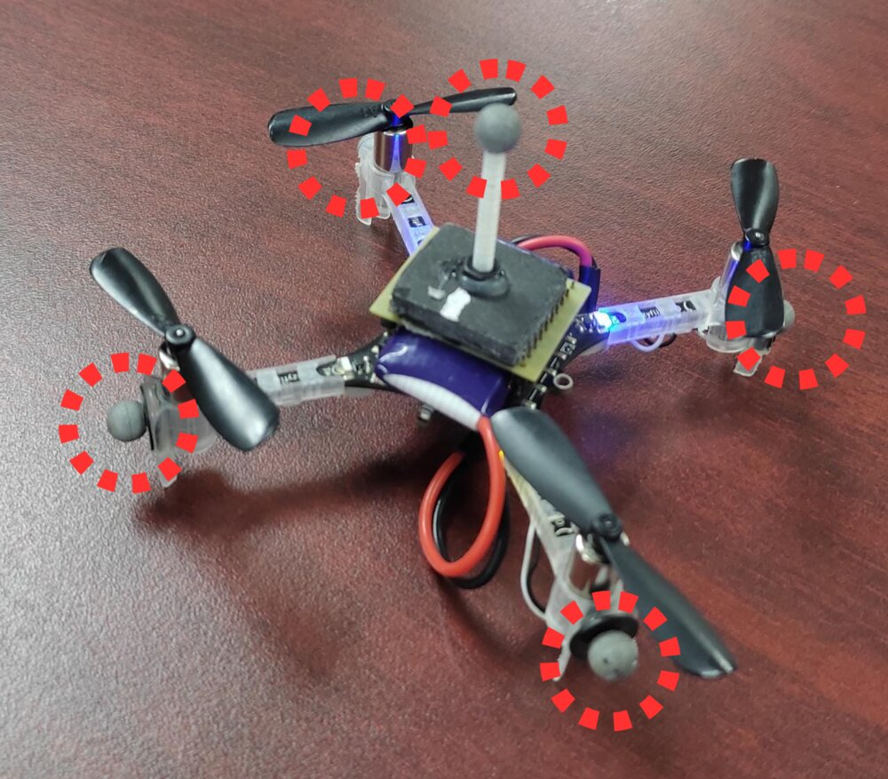
A.0.0.2 Ground station
To run the experiments, a computer with Ubuntu 20.04 and the ROS software is required; one of the strengths of ROS in the development of algorithms for robots is that it is an agnostic system, since it can be used with multiple programming languages (C++, Python and Java); it is widely used in the research and development of robots in various areas, such as mobile robotics, robotic arm manipulation, computer vision and industrial robotics. It also has a large community of users and developers who contribute additional packages and tools, which makes it a dynamic and constantly growing ecosystem [37].
To use the experimental platform, knowledge of ROS implemented in Python and C++ is required, since the programs that generate the desired trajectories and send the position in real time to the nano quadrotor are implemented through Python and C++ with ROS.
A.0.0.3 Crazyflie
The Crazyflie (see Figure 28) has gained popularity in the field of robotics and research due to its compact design and versatility. Thanks to its small size, it can maneuver in narrow and confined spaces, which makes it an ideal option for formation tasks and mapping tasks in reduced areas.
In addition to its modular design, this gives it the ability to add additional sensors according to the tasks to be performed. Among them are proximity detection modules, high-resolution cameras, advanced inertial sensors and other devices that allow increasingly sophisticated research and projects to be carried out.
The use of the Crazyflie in cooperative task research has proven to be highly beneficial. Being small and agile robots, they can collaborate efficiently in groups to address complex problems and perform collaborative tasks.
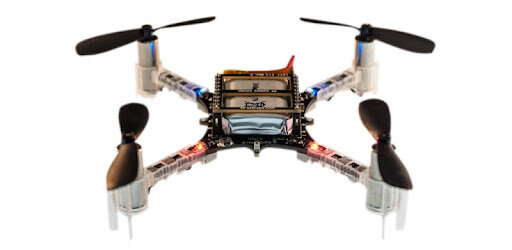
A.1 RPM to Newtons
Since the input of the control signals of the Crazyflie quadrotor is in RPM units, and the controllers presented in this thesis are represented in Newtons units, experimental calculations were developed to establish a relationship between RPM and Newtons. This relationship is described in the research work titled “System Identification of the Crazyflie 2.0 Nano Quadrocopter” [34], where the identification of the parameters of the Crazyflie 2.0 nano quadrotor is carried out. The function that represents this relationship is given by: \[f_i = 2.130295 \times 10^{-11} \cdot \text{cmd}^2_i + 1.032633 \times 10^{-6} \cdot \text{cmd}_i + 5.484560 \times 10^{-4} \tag{20}\] where \(f_i\) is the thrust generated by each motor \(i\) and cmd\(_i\) is the input sent to motor \(i\); the plot of this function is shown in Figure 29.
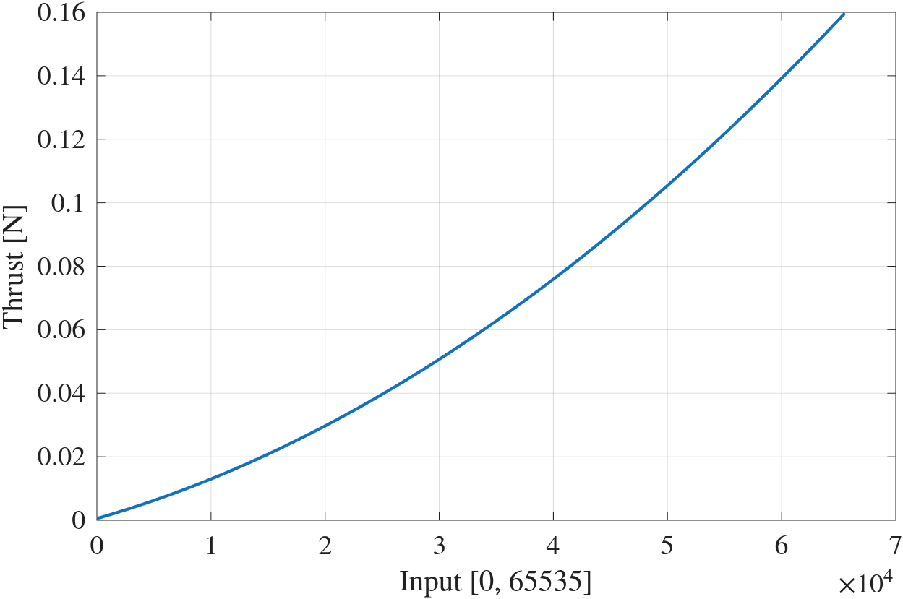